Строение кожи. Первичные и вторичные морфологические элементы. Функции кожи. Принципы диагностики и лечения кожных заболеваний. Пиодермия
Строение кожи: общий план и происхождение слоёв
Кожа — самый большой орган тела. Это не метафора для красного словца: её площадь у взрослого человека достигает 1,5–2 м², а масса составляет около 5% веса тела. Толщина при этом совсем небольшая — от 0,5 до 4,0 мм в самых плотных местах, например на подошвах и ладонях. Представьте себе лист материала площадью с небольшой ковёр, который при этом тоньше пальца, — и окажется, что это целый орган с сосудами, нервами, железами и клетками иммунной защиты.
Кожа устроена слоями, и каждый слой имеет своё эмбриональное происхождение. Снаружи расположен эпидермис — многослойный плоский ороговевающий эпителий. Он развивается из эктодермы (от греч. ektos — снаружи, derma — кожа), наружного зародышевого листка. Под эпидермисом лежит дерма — соединительнотканная основа кожи, происходящая из мезодермы (среднего зародышевого листка) и частично из нервного гребня. Ещё глубже расположена гиподерма — подкожная жировая клетчатка, тоже производная мезодермы. Таким образом, два разных зародышевых источника дают три различных по строению слоя, плотно спаянных в единый орган.
Кажется, что кожа — это просто оболочка, мешок, в котором удерживается всё остальное. На деле каждый её слой выполняет особую роль, и они не взаимозаменяемы. Эпидермис создаёт механический и химический барьер; дерма, толщиной от 0,5 до 4,75 мм, обеспечивает прочность и эластичность, несёт сосуды и нервные окончания; гиподерма служит депо энергии и термоизолятором. Убери любой — и орган перестаёт работать как целое.
Все три слоя полностью сформированы к 7-му месяцу внутриутробного развития. До этого срока кожа новорождённого ещё отличается от взрослой не только размером — у неё иной клеточный состав и иная химия поверхности. Один из значимых признаков незрелости: у детей до 7 лет в эпидермисе отсутствуют зернистый и блестящий слои, которые у взрослых играют ключевую роль в образовании защитного рогового слоя. Это объясняет, почему детская кожа более проницаема для токсинов и аллергенов и почему дозы наружных препаратов у детей рассчитываются иначе.
Ещё одно отличие детей от взрослых касается pH кожи — показателя кислотности её поверхности. У взрослых pH равен 5,5–6,0: поверхность слабокислая, и эта кислая среда подавляет рост большинства патогенных бактерий. У детей pH выше — 6,12–6,72, то есть среда менее кислая, а значит, и менее защищённая. Посмотрите на эти цифры вместе: разница в десятых долях единицы pH на первый взгляд ничтожна, но для микробного сообщества кожи она ощутима — примерно как разница в кислотности между ряженкой и молоком для кисломолочных бактерий.
Теперь пройдём по слоям подробнее — от поверхности вглубь, как если бы мы делали вертикальный срез. Эпидермис состоит из пяти слоёв клеток-кератиноцитов: базального, шиповатого, зернистого, блестящего и рогового. Кератиноциты рождаются в базальном слое, медленно движутся к поверхности, постепенно теряют ядро и органеллы и в конечном счёте превращаются в плоские роговые чешуйки, которые затем слущиваются. Именно в зернистом и блестящем слоях происходит финальное накопление кератогиалина и кератина — у детей до 7 лет эти слои не дифференцированы, и барьерная функция эпидермиса у них принципиально слабее.
Дерма под эпидермисом делится на два подслоя: сосочковый (тонкий, с петлями капилляров и нервными окончаниями, вдающийся пальцеобразными выростами в эпидермис) и сетчатый (более мощный, с толстыми пучками коллагена и эластиновыми волокнами). Именно в дерме расположены волосяные фолликулы, сальные и потовые железы, а также большинство иммунных клеток кожи. Т-лимфоциты, например, составляют 90% всех лимфоцитов кожи и располагаются преимущественно в эпидермисе и верхних слоях дермы. Наконец, под дермой — гиподерма: дольки жировой ткани, разделённые соединительнотканными перегородками, по которым проходят крупные сосуды и нервы.
Ключевой вывод раздела: кожа — трёхслойный орган с разным эмбриональным происхождением слоёв, и понимание этой слоистости напрямую объясняет, почему одни болезни поражают только эпидермис, другие уходят в дерму, а третьи захватывают подкожную клетчатку.
Строение кожи: эпидермис и его пять слоёв
Кожа составляет около 5% веса тела взрослого человека[1, с. 1] — и при этом устроена куда сложнее, чем кажется на ощупь. Снаружи лежит эпидермис: многослойный эпителий, в котором одни клетки только рождаются, другие уже умерли, а между ними — целая лестница превращений. Именно эту лестницу разберём сейчас, слой за слоем, снизу вверх.

Эпидермис толстой кожи — это пять слоёв, уложенных один на другой, и в каждом — свои клетки, свои органеллы, своя судьба. Нижний слой самый живой, верхний — мёртвый. Это не случайность, а направленный процесс: клетка рождается внизу, поднимается и постепенно превращается в роговую пластинку. Именно такой путь и описывают пять слоёв.
Базальный слой (stratum basale) — нижний, зародышевый. Он однорядный: один ряд призматических, цилиндрических клеток стоит прямо на базальной мембране.[2, с. 1] В цитоплазме этих клеток — много рибосом и митохондрий, много ДНК и РНК; постоянное митотическое деление гонит новые клетки вверх, в следующие слои. Среди кератиноцитов базального слоя живут три особые популяции. Меланоциты — клетки, синтезирующие пигмент меланин; они накапливают его в базальных кератиноцитах над апикальной частью ядра, создавая защитный экран от ультрафиолетового и радиоактивного излучения.[1, с. 18] Клетки Лангерганса — дендритные клетки иммунного надзора, «часовые» эпидермиса. Клетки Меркеля — тактильные, чувствительные; они связаны с нервными окончаниями и воспринимают лёгкое прикосновение.
Клетка Меркеля лежит прямо на базальной мембране и контактирует с чувствительным нервным волокном снизу; между кератиноцитами она встроена тонко — это типичная картина для базального слоя.
Шиповатый слой (stratum spinosum) состоит из 3–8 рядов клеток.[2, с. 2] Своё название он получил от вида под микроскопом: клетки соединены десмосомами — особыми белковыми мостиками, которые физически сшивают соседние мембраны, — и протоплазматическими отростками, отходящими во все стороны. Между клетками циркулирует лимфа: с ней поступают питательные вещества и уходят продукты обмена.[2, с. 2] Не будь этой системы циркуляции, питание многослойного эпителия пришлось бы обеспечивать собственными сосудами — а сосуды в эпидермис не заходят.
Зернистый слой (stratum granulosum) — 1–2 ряда клеток, и здесь процесс жизни уже явно уступает место процессу превращения.[2, с. 2] В ядрах кератиноцитов резко убывает количество ДНК и РНК, зато в цитоплазме появляются зёрна — включения кератогиалина, тонофибриллярно-кератогиалиновые комплексы. Это начало кератинизации: кератогиалин постепенно превращается в элеидин, и клетки зернистого слоя, эволюционируя, передают этот элеидин следующему слою.[2, с. 2]
Первые три слоя — базальный, шиповатый и зернистый — принято объединять под общим именем: мальпигиев слой. Это живая, делящаяся и питающаяся часть эпидермиса.[2, с. 2]
Снизу вверх по пяти слоям меняется форма клеток — от высоких цилиндрических в базальном до плоских безъядерных в роговом. В зернистом слое в цитоплазме лежат тёмные зёрна кератогиалина — именно они дали слою его название.
Блестящий слой (stratum lucidum) — безъядерные кератиноциты, заполненные гликогеном и элеидином.[2, с. 2] Здесь завершается превращение элеидина в кератин, кератиноциты окончательно созревают и готовятся стать роговым слоем. Распределён этот слой неравномерно: на коже складок и лица он плохо выражен или вовсе отсутствует, зато на ладонях и подошвах — хорошо развит.[2, с. 2] Это логично: именно там кожа испытывает наибольшую механическую нагрузку и нуждается в дополнительной прочности.
Роговой слой (stratum corneum) — верхний, самый наружный. Он состоит из безъядерных роговых пластинок, которые плотно прилегают друг к другу за счёт взаимопроникающих выростов клеточных оболочек и ороговевших десмосом.[2, с. 2] Живой клетки здесь уже нет — только прочный белковый остов. Именно роговой слой обеспечивает кислую реакцию поверхности кожи: pH составляет 5,5–6,0. Кислая среда — это химический барьер: она тормозит рост патогенных микробов и замедляет всасывание чужеродных веществ. У детей до 7 лет зернистый и блестящий слои ещё не сформированы, а реакция кожи слабощелочная — 6,12–6,72; это делает детскую кожу заметно уязвимее.
Весь путь от базального слоя до рогового — это жизнь кератиноцита от рождения до гибели, превращённой в защиту. Меланоцит в базальном слое создаёт экран от излучения, десмосомы шиповатого слоя держат эпидермис цельным, кератогиалин зернистого слоя запускает ороговение, блестящий слой его заканчивает, а роговой — удерживает всё вместе и выстраивает кислотный барьер на поверхности.
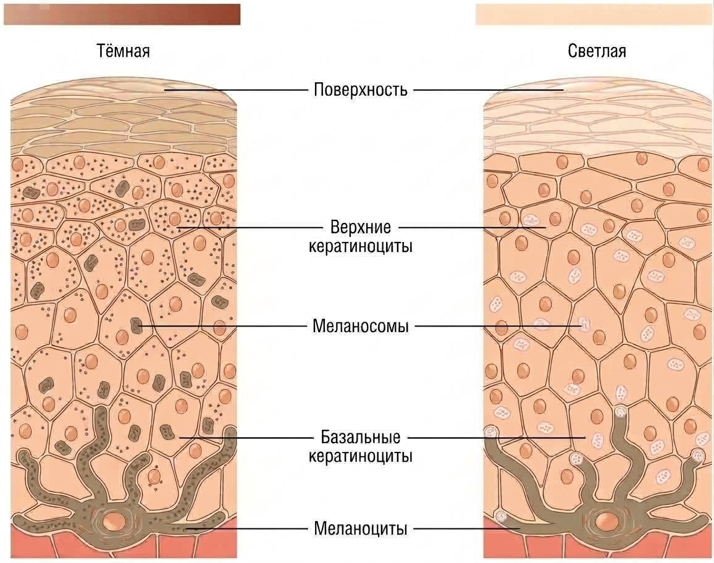
На этой схеме видно, как меланоцит распределяет меланосомы среди соседних кератиноцитов базального слоя: отростки меланоцита буквально «угощают» кератиноциты пигментом, и тот накапливается над ядром — как зонтик, прикрывающий ДНК от ультрафиолета. Именно так выглядит пигментная защита в действии.
Строение кожи: базальная мембрана, дерма и гиподерма
Кожа в целом занимает около 5% веса тела взрослого человека[1, с. 1], а её толщина в разных местах различается от 0,5 до 4,0 мм. Всё это многообразие определяется тремя структурами, которые лежат под эпидермисом: базальной мембраной, дермой и гиподермой. Именно здесь — каркас, питание и опора кожи.
Базальная мембрана
Базальная мембрана — то есть попросту тонкая пограничная пластинка между эпидермисом и дермой — образуется за счёт корнеподобных отростков самого базального слоя эпидермиса.[2, с. 2] Она выполняет сразу две важнейшие задачи. Первая — прочно скреплять эпидермис с дермой, не давая слоям расходиться. Вторая — служить барьером: мембрана препятствует проникновению в дерму бактерий, токсинов, иммунных комплексов и антигенов.[2, с. 2] При этом эпидермис лишён собственных кровеносных сосудов и питается диффузно — именно через базальную мембрану, получая из дермы кислород и питательные вещества.

Дерма
Дерма, или собственно кожа, построена из клеточных элементов, волокнистых субстанций и межуточного вещества. Её толщина составляет 0,5–4,75 мм.[2, с. 3] В дерме два слоя — сосочковый и сетчатый, — и они устроены принципиально по-разному. Посмотрите на таблицу ниже: в ней сведено всё, что их разделяет.
| Признак | Сосочковый слой | Сетчатый слой |
|---|---|---|
| Ткань | Нежноволокнистая соединительная ткань с аморфным бесструктурным веществом | Компактная грубоволокнистая соединительная ткань |
| Волокна | Тонкие коллагеновые, эластические и аргентофильные волокна | Мощные пучки коллагеновых волокон, окружённых сетями эластических и аргентофильных волокон |
| Клетки | Фибробласты, фиброциты, гистиоциты, тучные клетки, меланофаги — в большом количестве | Те же клеточные элементы, но значительно реже |
| Сосуды и нервы | Капиллярные петли, питающие эпидермис; нервные окончания | Менее развитая сосудистая сеть; глубокое сосудистое сплетение, питающее придатки кожи |
| Главная функция | Питание эпидермиса, иммунный надзор, восприятие раздражений | Механическая прочность кожи |
Сосочковый слой (stratum papillare) расположен прямо под базальной мембраной. Его называют нежноволокнистым: тонкие коллагеновые, эластические и аргентофильные волокна здесь переплетены рыхло, а между ними — обилие клеток и сосудов.[2, с. 3] Среди клеток выделяют несколько типов. Фибробласты — то есть попросту клетки-строители, которые синтезируют коллаген и межуточное вещество — вырабатывают в том числе гликозаминогликаны, сложные углеводно-белковые соединения, удерживающие воду в дерме. Главный из гликозаминогликанов — гиалуроновая кислота, которая обеспечивает упругость и гидратацию ткани. Гистиоциты — то есть попросту тканевые макрофаги, клетки-«мусорщики» — фагоцитируют бактерии и чужеродные частицы. Тучные клетки — то есть попросту клетки, набитые гранулами с биологически активными веществами, прежде всего гистамином, — участвуют в воспалительных и аллергических реакциях. Именно в сосочках дермы расположены капиллярные петли, питающие эпидермис, и нервные окончания, воспринимающие боль, зуд и температуру.[2, с. 3] Т-лимфоциты, составляющие 90% всех лимфоцитов кожи, располагаются в эпидермисе и в верхних слоях дермы — то есть именно здесь сосредоточен передний край иммунной защиты.[1, с. 17]

На гистологическом срезе выше хорошо видно, как сосочковый слой плавно переходит в сетчатый: нежные волокна сверху сменяются плотными, грубыми пучками снизу. Граница между слоями не резкая, но разница в толщине и «плотности» волокон заметна сразу.
Сетчатый слой (stratum reticulare) составляет основную, самую толстую часть дермы. Его строма — мощные пучки коллагеновых волокон, окружённые сетями эластических и аргентофильных волокон.[2, с. 3] Именно от структуры сетчатого слоя зависит механическая прочность кожи.[2, с. 3] Клеток здесь заметно меньше, чем в сосочковом слое: сетчатый слой — это прежде всего волокнистый каркас. Здесь же, в глубоком сосудистом сплетении, берут начало сосуды, питающие волосяные фолликулы, сальные и потовые железы.[2, с. 5] Артериовенозные клубочковые анастомозы, соединяющие артериолы и венулы, в норме составляют 16–66 капилляров на 1 мм² кожи — и именно их сокращение и расширение обеспечивают терморегуляцию.[2, с. 5]
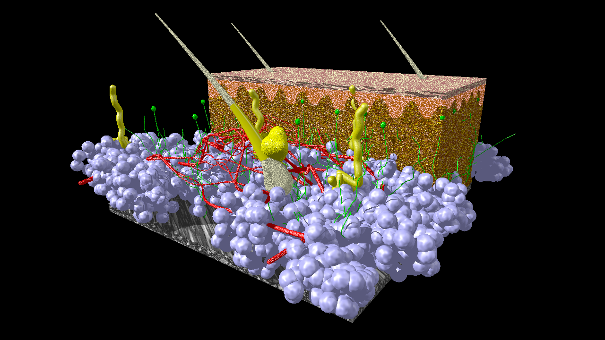
Сосочковый слой дермы «вдаётся» выростами в эпидермис снизу — это и есть дермальные сосочки с капиллярными петлями. Сетчатый слой занимает всё пространство ниже, вплоть до гиподермы.
Гиподерма
Под дермой расположена гиподерма (hypoderma), или подкожная жировая клетчатка. Её основу составляют жировые клетки, собранные в дольки. Гиподерма выполняет сразу три роли. Во-первых, это главный участник терморегуляции: жировой слой не пропускает тепло наружу и защищает внутренние органы от охлаждения. Во-вторых, жировые клетки — депо жирорастворимых витаминов A, E, F и K, которые откладываются здесь про запас.[1, с. 8] В-третьих, гиподерма — механическая опора для наружных слоёв кожи: она амортизирует удары и давление. Кожа, в которой этот слой слабо выражен, быстрее «стареет» и покрывается морщинами.[1, с. 8]
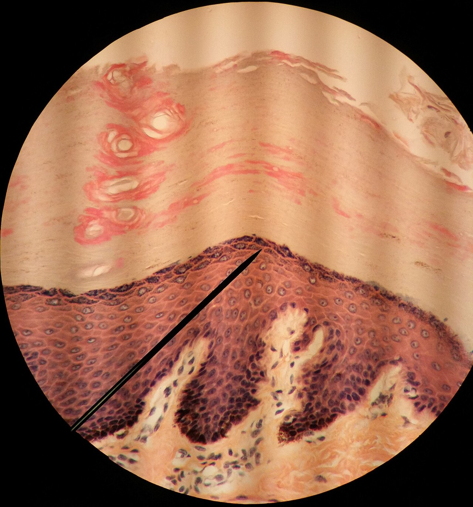
На этом гистологическом срезе толстой кожи все три зоны — эпидермис, дерма и гиподерма — видны одновременно. Обратите внимание на нижнюю треть среза: крупные округлые клетки со светлой цитоплазмой — это и есть жировые клетки гиподермы. Их размер и правильная форма резко отличают их от более мелких и тёмных клеток дермы выше.
Главное, что следует вынести из этого раздела: базальная мембрана — не просто граница, а активный барьер и канал питания; сосочковый слой богат клетками и сосудами, сетчатый — волокнами и прочностью; гиподерма — не «лишний жир», а витаминное депо, термоизолятор и амортизатор одновременно.
Строение кожи: кровоснабжение, лимфатическая система и иннервация
Кожа на 69–73% состоит из воды и пронизана густой сетью сосудов, лимфатических капилляров и нервов — всё это делает её не просто покровом, а живым органом с собственной системой питания, дренажа и чувства. Но устроена эта система строго послойно, и разобраться в ней проще всего, двигаясь снизу вверх — от подкожной клетчатки к поверхности.
Артериальное кровоснабжение: три сети
Питающие артерии приходят из мышечной фасции и сразу формируют первую сеть — фасциальную сеть (rete fasciale), расположенную на границе гиподермы и фасции мышц. Она крупноячеистая, с хорошо развитыми анастомозами. Отсюда сосуды поднимаются в дерму и на границе её сетчатого и сосочкового слоёв образуют вторую сеть — субдермальное сплетение (plexus subcutaneus). Именно от него питаются волосяные фолликулы, сальные и потовые железы. Третья сеть — поверхностное сосудистое сплетение — лежит уже в верхней части сосочкового слоя; от неё отходят терминальные артериолы к каждому сосочку дермы.
В самом сосочке капилляр имеет форму дамской шпильки: он поднимается к вершине артериальным коленом, а спускается более широким венозным. Кровь из этих петель уходит в венулы, формирующие сначала поверхностную подсосочковую сеть, затем — вторую, параллельную ей, ещё чуть глубже. Третья венозная сеть лежит в сетчатом слое, а в гиподерме расположена крупноячеистая глубокая венозная сеть, связанная с глубоким артериальным сплетением через множество артерио-венулярных анастомозов.[4, с. 8] Эти анастомозы — ключевое звено терморегуляции: открываясь, они пускают кровь в обход капилляров и быстро меняют теплоотдачу.
Одна деталь важна особо: эпидермис лишён собственных сосудов и питается диффузно через базальную мембрану из капилляров дермы. Это объясняет, почему поверхностные повреждения кожи — ссадины в пределах эпидермиса — практически не кровоточат.
Лимфатическая система
Лимфатических сетей в коже тоже две. Глубокая располагается на границе дермы с подкожной клетчаткой, поверхностная — на уровне вершин сосочков.[2, с. 5] От поверхностной сети в каждый сосочек вдаются слепые выросты — сосочковые синусы.[4, с. 8] Обе сети широкопетлистые и хорошо анастомозируют между собой.
Особенность лимфатических капилляров кожи — клапанная система, которая направляет ток лимфы в одну сторону. У новорождённых эти клапаны несовершенны, поэтому лимфа застаивается, образуя так называемые «лимфатические озёра», — отсюда склонность грудных детей к отёкам даже при минимальных воспалительных реакциях.[2, с. 5]
Иннервация: сплетения и рецепторы
Нервный аппарат кожи представлен двумя сплетениями и разнообразными рецепторами, распределёнными по глубине строго в соответствии с тем, что им нужно воспринимать. Основное нервное сплетение лежит в гиподерме; от него поднимается поверхностное сплетение — в нижний отдел сосочкового слоя.[2, с. 5]
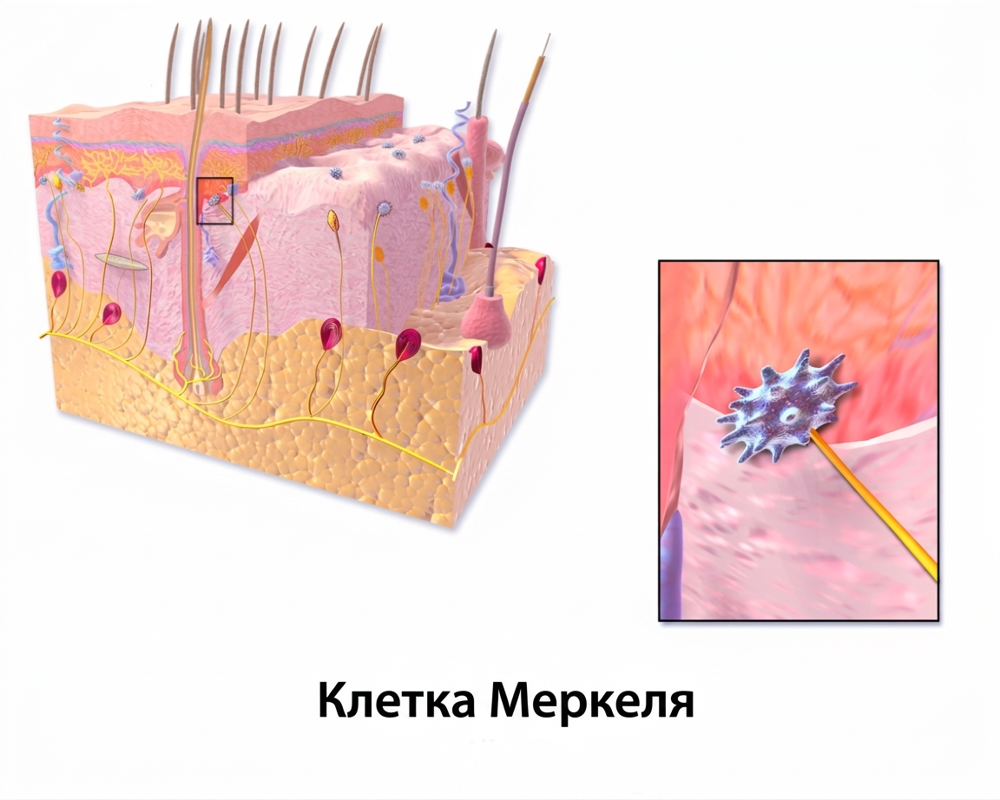
Рецепторы делятся на свободные и инкапсулированные.[4, с. 8] Свободные нервные окончания — безмиелиновые волокна — пронизывают всю дерму и эпидермис. Среди них особое место занимают осязательные клетки Меркеля, расположенные в базальном слое эпидермиса: они воспринимают лёгкое тактильное прикосновение.[2, с. 5]
Посмотрите на схему строения рецепторного аппарата кожи чуть ниже — на ней хорошо видно, как разные рецепторы занимают каждый свой этаж.
Клетка Меркеля — небольшое тело на границе базального слоя и дермы, связанное с нервным диском. Этот рецептор находится буквально у самой поверхности, что и обеспечивает тонкое осязание — различение фактуры, рельефа, формы. Остальные инкапсулированные рецепторы залегают глубже.
Тельца Мейснера (Meissner's corpuscles) — небольшие овальные образования в сосочках дермы; они воспринимают боль, зуд и жжение.[2, с. 5] Колба Краузе (end-bulb of Krause) — инкапсулированный рецептор холода, расположенный в эпидермисе.[2, с. 5]
Колба Краузе устроена так: терминаль нервного волокна окружена соединительнотканной капсулой. Именно капсула отсекает большинство механических стимулов и пропускает преимущественно температурный сигнал.
Это напоминает термос с двойными стенками: внешняя оболочка отделяет содержимое от окружающей среды, но позволяет проходить нужному воздействию — только температуре, а не давлению. Так же устроен и рецептор: капсула фильтрует стимул, оставляя лишь тот модальный сигнал, для которого рецептор настроен.
Тельца Руффини (Ruffini endings) воспринимают тепло и расположены на границе гиподермы и дермы. Тельца Фатера-Пачини (Vater-Pacini corpuscles) — крупные луковицеобразные образования в глубоких слоях кожи и подкожной клетчатке; они реагируют на давление и воспринимают положение тела в пространстве.[2, с. 5]
Таким образом, каждый вид чувствительности — тактильный, болевой, температурный, проприоцептивный — обеспечен своим рецептором на строго определённой глубине. Тельца Меркеля и Мейснера работают у самой поверхности, колбы Краузе — в эпидермисе, тельца Руффини и Фатера-Пачини — в глубоких слоях. Нервные сплетения собирают эти сигналы послойно: поверхностное — в нижнем отделе сосочкового слоя, основное — в гиподерме, и далее по кожным ветвям спинномозговых и черепных нервов. Т-лимфоциты, которых в эпидермисе и верхних слоях дермы сосредоточено 90% всех лимфоцитов кожи, дополняют эту систему иммунологическим надзором — но это тема следующего раздела.
Строение кожи: придатки — железы, волосы, ногти
Кожа — не просто барьер из нескольких слоёв клеток. В её толще и на поверхности работают железы, растут волосы и ногти — всё это называют придатками кожи. Они возникают из эпидермиса ещё в эмбриональном периоде и остаются его производными на протяжении всей жизни. Именно с придатков нередко начинаются серьёзные болезни кожи, поэтому знать их строение — не академическая абстракция, а рабочий инструмент диагностики.
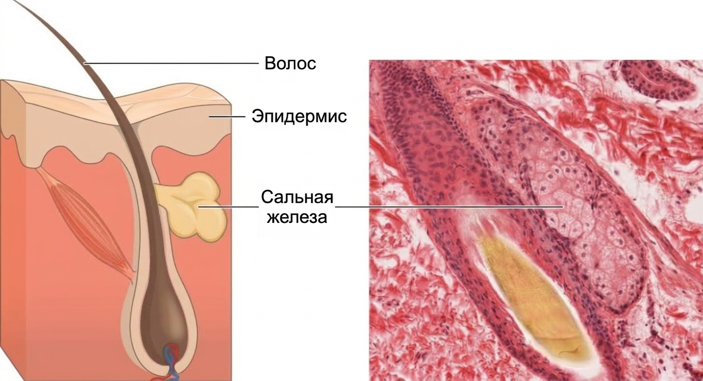
Сальные железы
Зачатки сальных желёз появляются уже на 2–3-й неделе внутриутробного развития, и к рождению они уже активно работают — именно их секрет составляет жировую смазку новорождённого.[2, с. 6] По строению это сложные альвеолярные образования. Главная их особенность — голокриновый тип секреции: клетка-секретоцит постепенно накапливает липиды, а затем целиком разрушается и сама становится секретом — кожным салом.[2, с. 6] Это принципиально отличает сальные железы от большинства других желёз организма, где клетка выделяет продукт и остаётся жить дальше.
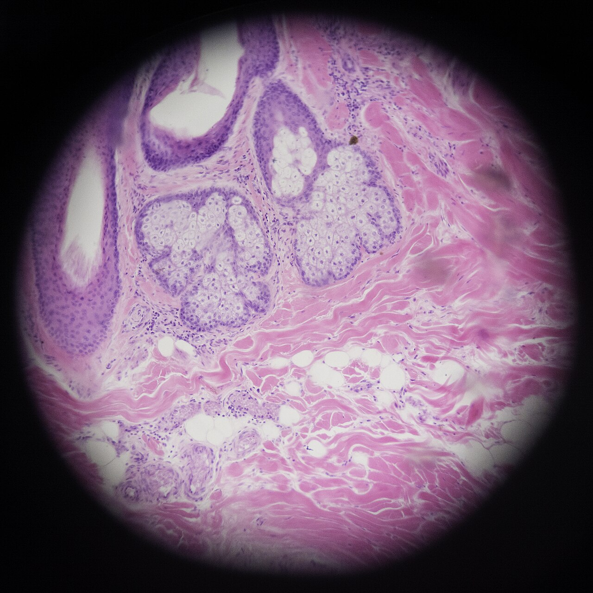
Почти все сальные железы открываются в волосяной фолликул — трубкообразное углубление, в котором сидит волос. Вместе они образуют сально-волосяной комплекс. Исключения — кожа половых органов и крупные сальные железы на лице и спине: те открываются прямо на поверхность кожи, минуя фолликул.[2, с. 6]
Секрет сальных желёз — смесь жирных кислот, эфиров холестерина, алифатических алкоголей, углеводородов, глицерина и азотисто-фосфатных соединений. Смешиваясь с потом, он образует водно-липидную мантию с бактерицидными и фунгистатическими свойствами. Кроме того, с кожным салом выводятся токсины и многие лекарственные вещества — это экскреторная функция желёз.[1, с. 19]
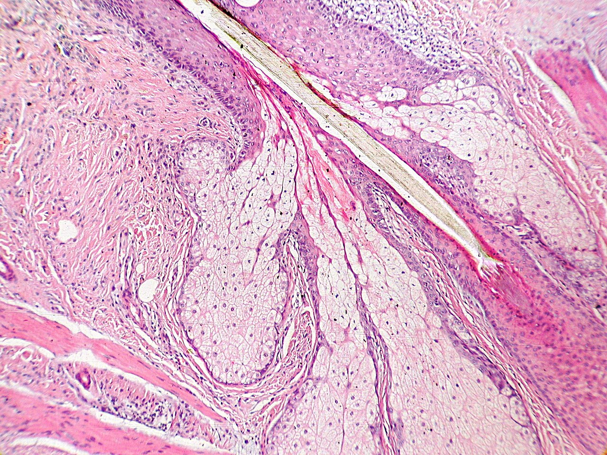
Посмотрите на срез выше: хорошо видно, как проток сальной железы впадает прямо в стенку волосяного фолликула — железа как будто «нанизана» на фолликул сбоку. Именно в этом месте и скапливается секрет при закупорке; отсюда же начинается воспаление при акне и фолликулитах.
Потовые железы: две разные системы
Потовые железы — не единая группа, а два принципиально разных типа. Их различает и расположение, и характер секреции, и то, в какой период жизни они начинают работать. Взгляните на таблицу ниже, а затем разберём каждый пункт.
| Признак | Экринные железы | Апокринные железы |
|---|---|---|
| Локализация | Вся кожа, кроме головки полового члена, малых половых губ и внутреннего листка крайней плоти | Кожа гениталий, ареол сосков, подмышечных впадин |
| Куда открываются | Непосредственно на поверхность кожи | В сально-волосяные фолликулы |
| Тип секреции | Мерокриновый (клетка не гибнет, секрет выделяется диффузией и осмосом) | Апокриновый (отшнуровывается верхушка клетки) |
| Формирование | 2-й месяц внутриутробного развития, от 200 до 800 на 1 см² | Формируются внутриутробно, но бездействуют до полового созревания |
| Срок активности | С рождения (функция нарастает в первые 2 года), взрослый тип — с полового созревания | С полового созревания до 60–65 лет |
Экринные железы — самые многочисленные. Их плотность варьирует от 200 до 800 на 1 см².[2, с. 6] Их нет только на головке полового члена, малых половых губах и внутреннем листке крайней плоти.[2, с. 7] Секреторные клетки при работе не погибают — секрет образуется за счёт диффузии и осмоса, то есть это мерокриновый тип.[2, с. 6] У новорождённого железы уже сформированы, но поначалу почти не работают: потоотделение нарастает в первые два года жизни, а переход к взрослому типу происходит в период полового созревания. До этого преобладает так называемое незаметное потоотделение.[2, с. 6]
Апокринные железы расположены лишь в нескольких зонах: в коже гениталий, ареол сосков и подмышечных впадинах. Они открываются не прямо на кожу, а в сально-волосяные фолликулы.[2, с. 7] Главное клиническое отличие — сроки активности: апокринные железы начинают функционировать только с наступлением полового созревания и работают вплоть до снижения половых гормонов, то есть примерно до 60–65 лет.[2, с. 7] Именно с ними связан гнойный гидраденит — воспаление апокринных желёз, которое даёт глубокие абсцессы в подмышечных впадинах и паховых складках.
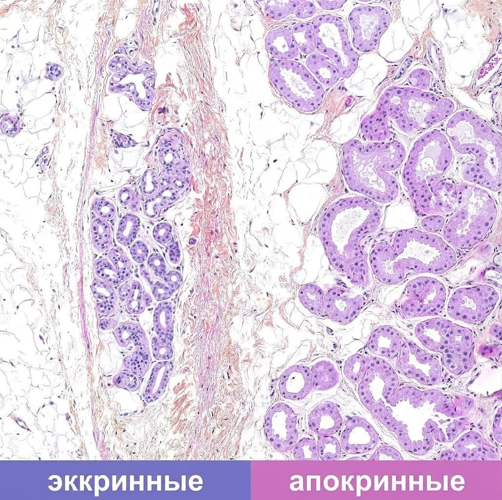
На этом гистологическом срезе видны концевые отделы обоих типов желёз рядом. Обратите внимание на размер просвета: апокринные железы заметно крупнее экринных, а их клетки выше — это связано с тем, что при секреции отшнуровывается верхушка клетки и просвет частично заполняется клеточным материалом.
Строение волоса и цикл его роста
Волосы начинают формироваться на 2–3-м месяце эмбрионального развития.[2, с. 7] Первые волосы плода — лануго (lanugo): тонкие, нежные, лишённые пигмента. После рождения их сменяет веллус — мягкий пушковый волос, покрывающий большую часть тела взрослого. Длинные и щетинистые волосы — третий тип, они характерны для волосистой части головы, бровей, ресниц, а с наступлением полового созревания — и для подмышечных впадин, лобка, лица у мужчин.[2, с. 7]
Волос состоит из двух частей. Стержень — то, что видно над кожей. Корень — часть, уходящая вглубь дермы и заключённая в волосяной фолликул, трубчатое влагалище из эпидермальных клеток. На дне фолликула находится луковица с волосяным сосочком — именно здесь делятся клетки, дающие рост волосу. Снаружи к фолликулу крепится пучок гладких мышечных волокон — мышца, поднимающая волос. При сокращении она приподнимает волос и создаёт «гусиную кожу».
Стержень волоса трёхслойный: снаружи — кутикула из плоских ороговевших клеток, под ней — корковый слой, придающий волосу прочность, и в центре — мозговое вещество. Цвет определяется меланином, который вырабатывают ДОФА-положительные меланоциты луковицы.
Волос не растёт непрерывно — он проходит три последовательные фазы. Анаген — фаза активного роста: для длинных волос она длится 5–7 лет. Катаген — фаза покоя, или инволюции фолликула: занимает 1–3 недели. Телоген — фаза выпадения: продолжается около 3 месяцев, после чего на месте выпавшего волоса начинается новый анаген.[2, с. 8] В норме большинство волос одновременно находятся в анагене, поэтому суточное выпадение 50–100 волос незаметно.
.jpg)
На этом поперечном срезе кожи волосистой части головы видны фолликулы в разных фазах цикла: одни крупные, с хорошо выраженной луковицей — это анаген; рядом видны более мелкие, сморщенные структуры — катаген или телоген. Сальные железы, открывающиеся в фолликул, хорошо различимы как более светлые дольчатые образования сбоку от него.
Строение ногтя
Ноготь закладывается на 3-м месяце внутриутробного развития. По составу это плотная роговая масса, содержащая 89% твёрдого кератина, 10% воды и около 1% жиров. Понимание анатомии ногтя важно уже хотя бы потому, что именно ноготь поражается при онихомикозах и является мишенью при некоторых системных болезнях.
Видимая часть — ногтевая пластинка — розовая, потому что под ней просвечивают капилляры ногтевого ложа. У основания пластинки находится белая полулунная зона — лунка. Сзади и с боков пластинку охватывают ногтевые валики; тонкая роговая пластинка, которую образует проксимальный валик поверх корня ногтя, — это эпонихий, или кутикула ногтя.
Под видимой пластинкой в глубине, под проксимальным валиком, скрыт корень ногтя. Под ним расположен матрикс ногтя — зона эпидермальных клеток-онихобластов, за счёт которых ноготь и растёт. Нижние клетки матрикса делятся и обеспечивают рост в длину; верхние дифференцируются в роговое вещество.[4, с. 11] Ноготь обновляется полностью за 80–115 дней на пальцах рук. По данным учебника, обновление ногтевой пластинки занимает 170–230 дней;[4, с. 11] источники расходятся в этой цифре, поскольку скорость роста зависит от возраста, питания и времени года. Ногти на кистях растут быстрее, чем на стопах.[4, с. 11]
Вывод, который здесь важно запомнить: всё, что происходит с ногтевой пластинкой — полосы, ямки, ломкость, — отражает события в матриксе, и по дефектам пластинки можно приблизительно датировать, когда именно нарушилось питание или случился стресс.
Красная кайма губ и слизистая рта
Слизистая полости рта формируется у 7–8-недельного плода: полость рта и язык развиваются из эктодермы, слизистая глотки и гортани — из мезодермы.[1, с. 1] Эпителий слизистой рта двухслойный: базальный и шиповатый. Он содержит гликоген, клетки Лангерганса и меланоциты. Собственно слизистый слой под ним построен из коллагеновых, преколлагеновых и эластических волокон с мелкими слюнными железами.[2, с. 9]
Переходная зона между кожей и слизистой — красная кайма губ — устроена иначе, чем и то и другое. Типичные для кожи роговой, блестящий и зернистый слои здесь отсутствуют или видоизменены. Различают две зоны. Наружная зона сохраняет элементы рогового слоя, но ороговение неполное; поверхностный слой пропитан элеидином, который и придаёт губам характерный блеск. Сальные железы здесь есть только в углах рта. Внутренняя зона — зона Клейна — имеет ядра в наружном слое эпителия и очень удлинённые дермальные сосочки, в которых проходят петли капилляров; именно они просвечивают сквозь тонкий эпителий, создавая красный цвет каймы.[2, с. 9]
Красная кайма губ — частое место локализации хейлитов и герпетической инфекции, а зона Клейна нередко упоминается при описании предраковых изменений эпителия. Знание границы между наружной зоной и зоной Клейна помогает точно описывать локализацию патологического процесса.
Разбор случая: от осмотра к выводу
Шаг первый — что видит врач. На приёме пациент с болезненным уплотнением в подмышечной впадине. Кожа над ним красная, напряжённая, флюктуация не определяется. Волосяных фолликулов в зоне поражения не видно.
Шаг второй — что из этого следует. Воспаление без чёткой связи с фолликулом, в типичной зоне расположения апокринных желёз, у взрослого пациента. Апокринные железы открываются в сально-волосяные фолликулы, но их концевые отделы лежат в глубине дермы, поэтому абсцесс формируется глубоко и флюктуация появляется поздно. Это не фолликулит и не фурункул, а гидраденит.
Шаг третий — что делать дальше. Уточнить давность и рецидивирующий характер процесса, осмотреть паховые складки и ареолы — другие зоны апокринных желёз. При хроническом течении с формированием свищей и рубцов показано хирургическое иссечение, а не одно лишь вскрытие абсцесса, поскольку источник воспаления — железистая ткань, а не единичная полость.
Функции кожи
Кожа — самый большой орган человеческого тела, и у неё нет одной главной задачи. Она одновременно служит броней, термостатом, органом чувств, иммунным постом и химическим заводом. Чтобы не потерять ни одну из этих ролей, разберём каждую — и сразу с тем, какая именно структура её выполняет.
Посмотрите на схему ниже: на ней хорошо видно, как устроена кожа в разрезе — три слоя, каждый со своими клетками и придатками. Держите её перед собой, пока читаете: почти каждая функция, о которой пойдёт речь, привязана к конкретному слою или клетке на этом рисунке.
Кожа устроена в три этажа: эпидермис с роговым слоем на самом верху, дерма с сосудами и рецепторами посередине и гиподерма внизу. Именно это трёхэтажное строение и объясняет, почему кожа может делать столько разных вещей одновременно.
Перед тем как разбирать каждую функцию словами, взгляните на сводную таблицу — она даёт картину целиком и показывает, какой морфологический субстрат стоит за каждой ролью кожи.
| Функция | Морфологический субстрат |
|---|---|
| Защитная (механическая, химическая, УФ) | Роговой слой, водно-липидная мантия, коллагеновые и эластические волокна дермы, гиподерма, меланоциты |
| Иммунная (антигенпредставляющая) | Клетки Лангерганса, Т- и В-лимфоциты, макрофагальная система (гистиоциты, дендритические клетки, тучные клетки) |
| Терморегуляторная | Кровеносные сосуды дермы, артериовенозные шунты, потовые железы |
| Секреторная | Сальные и потовые железы, кератиноциты, иммунорегуляторные клетки |
| Экскреторная | Сальные и потовые железы (выведение токсинов, лекарственных веществ) |
| Резорбционная | Роговой слой, волосяные фолликулы, выводные протоки желёз |
| Дыхательная и обменная | Вся толща кожи; депо углеводов, холестерина, аминокислот |
| Рецепторная | Тельца Руффини, колбы Краузе, тельца Мейснера и Пачини, свободные нервные окончания |
| Кожа как диэлектрик и депо крови | Роговой слой (диэлектрик), кровеносное русло дермы и гиподермы (депо) |
Теперь — то же самое словами, строка за строкой.
Защитная функция — главная, и лектор называет её первой не случайно. Она складывается из нескольких независимых механизмов. Механическую защиту от давления, ушибов и разрывов обеспечивает прежде всего дерма: прочность коллагеновых и эластических волокон и буферные свойства гиподермы.[4, с. 13] Химическую и биологическую защиту несёт водно-липидная мантия — тонкая плёнка на поверхности кожи, которая образуется, когда кожное сало, выработанное сальными железами, смешивается с потом.[1, с. 18] Кислая реакция этой плёнки тормозит рост бактерий и грибков, и именно поэтому у людей с нарушенной секрецией сальных желёз нередко развиваются инфекции кожи. От высыхания кожу спасает тот же компактный роговой слой в паре с этой мантией.[2, с. 21] Наконец, от повреждающего действия ультрафиолета защищают меланоциты — клетки, которые синтезируют пигмент меланин; он накапливается в базальных кератиноцитах над ядром и образует экран против УФ- и радиоактивного излучения.[1, с. 18]
Иммунная функция кожи, или, точнее, её антигенпредставляющая функция, реализуется несколькими популяциями клеток. Главные из них — Т-лимфоциты: они составляют 90% всех лимфоцитов кожи и располагаются в эпидермисе и верхних слоях дермы.[1, с. 17] В-лимфоциты уходят глубже — в средние и глубокие слои дермы. Девяносто против десяти — это не просто соотношение: именно Т-клетки несут основную ответственность за клеточный иммунный ответ, и их преобладание объясняет, почему большинство кожных воспалительных реакций — клеточного, а не гуморального типа. Особую роль играют клетки Лангерганса в эпидермисе: встретив чужеродный антиген, они захватывают его, уходят в лимфатические сосуды дермы, мигрируют в лимфатические узлы и там представляют антиген Т-лимфоцитам — запуская специфический иммунный ответ. В дерме и гиподерме иммунную работу продолжает макрофагальная система: фибробласты, гистиоциты, дендритические клетки и тучные клетки.[1, с. 17] Лимфоциты вокруг посткапиллярных венул поверхностного сплетения содержат одинаковое количество хелперов и супрессоров: хелперно-супрессорный индекс равен 0,93–0,96.[2, с. 20]
Терморегуляторная функция — это управление теплообменом между телом и средой. Теплоотдача идёт тремя путями: испарением пота, инфракрасным излучением и теплопроведением при контакте с поверхностью другой температуры.[1, с. 20] Сосуды дермы здесь — главный инструмент. При жаре они расширяются, объём крови в коже возрастает, и тело отдаёт больше тепла; при холоде — суживаются, кровь уходит к внутренним органам, и теплоотдача резко падает.[4, с. 16] Наиболее эффективный путь отдачи тепла — испарение пота; и это тоже порядок величин: кожные терморецепторы в 10 раз менее эффективны в изменении температуры тела, чем центральные рецепторы гипоталамуса.[4, с. 16] При некоторых дерматозах — псориазе, грибовидном микозе — воспалительная реакция приводит к генерализованному расширению сосудов кожи, и в кожный кровоток может привлекаться до 10–20% циркулирующей крови; это прямо сказывается на терморегуляции всего организма.[4, с. 16]
Секреторная и экскреторная функции тесно связаны. Сальные железы вырабатывают кожное сало из жирных кислот, эфиров холестерина, алифатических алкоголей, углеводородов и других соединений; смешиваясь с потом, оно и образует ту самую водно-липидную мантию с бактерицидной и фунгистатической активностью.[1, с. 19] Но помимо секреции, сальные железы выполняют и экскреторную роль: с кожным салом выводятся токсины и многие лекарственные вещества. Кератиноциты и иммунорегуляторные клетки тоже секретируют биологически активные факторы, участвующие в воспалительных и иммунологических реакциях.
Резорбционная функция — это способность кожи всасывать вещества, нанесённые на её поверхность. Здоровая кожа проницаема почти для любых веществ, однако уровни пенетрации разных соединений могут различаться в 10 000 раз.[4, с. 17] Роговой слой — главный барьер: большинство веществ преодолевают его трансдермально и надолго в нём задерживаются. Более мелкие молекулы проникают через волосяные фолликулы и протоки желёз. Именно на резорбционной функции основано применение местных лекарственных форм: мазей, кремов, трансдермальных пластырей. Когда на кожу наносят мазь, она прекращает испарение, повышает местную температуру и разрыхляет роговой слой — всасывание усиливается.
Обменная и дыхательная функции означают, что кожа участвует в углеводном, белковом, жировом, витаминном и водном обменах. По интенсивности водного и минерального обмена она лишь незначительно уступает печени и мышцам. Кожа человека на 69–73% состоит из воды, и именно через неё происходит постоянное испарение. В коже депонируются углеводы, холестерин, йод, аминокислоты и желчные кислоты — в период голодания эти запасы расходуются. Протеогликаны кожи, состоящие из полисахаридных (95%) и белковых (5%) компонентов, связывают воду и катионы, формируя основное вещество дермы.[4, с. 12]
Рецепторная функция делает кожу мультифакторным анализатором. Тактильную чувствительность — давление и осязание — несут тельца Мейснера и диски Меркеля; холод воспринимают колбы Краузе, тепло — тельца Руффини. Болевые рецепторы реагируют на стимул, превышающий пороговый. Рецепторы размещены неравномерно: на кончиках пальцев их плотность несравнимо выше, чем на спине, — и это не случайно, а прямое следствие функциональной нагрузки.
Наконец, два свойства, которые нередко упускают. Кожа как диэлектрик: сухой роговой слой обладает высоким электрическим сопротивлением, что защищает от поражения током в быту; увлажнённая или повреждённая кожа его теряет. Кожа как депо крови: развитая сеть сосудов дермы и гиподермы способна удерживать значительный объём крови, перераспределяя его при изменении потребностей организма — это важно, например, при шоке, когда периферические сосуды спазмируются и кровь перенаправляется к жизненно важным органам.
Главный вывод раздела: каждая функция кожи привязана к конкретному слою или клеточному типу — и именно поэтому поражение разных уровней кожи даёт принципиально разные клинические картины. Разрушение рогового слоя снимает химическую защиту и резорбционный барьер. Гибель меланоцитов открывает путь ультрафиолету. Нарушение иммунных клеток запускает аллергические и аутоиммунные дерматозы. Понимать эту связь — значит уже думать как дерматолог.
Кератинизация: процесс образования кератина в эпидермисе
Кажется, что кожа — это просто оболочка, которая уже сформирована и просто лежит снаружи. На деле кожа — живое производство, которое не останавливается ни на секунду: каждую минуту клетки базального слоя делятся, поднимаются вверх и на ходу превращаются в плотный роговой барьер. Этот процесс называют кератинизацией, и весь он занимает несколько недель непрерывной работы.
В центре процесса — кератин, основной белок эпидермиса.[2, с. 2] Его производят сами эпидермальные клетки, кератиноциты, превращая себя в строительный материал. Образование кератина — это сложный секреторный процесс, и у него есть чёткий маршрут: каждый этап привязан к конкретному слою эпидермиса.
Всё начинается в базальном слое. Здесь только что разделившийся кератиноцит содержит длинные белковые нити — тонофиламенты. Это первичная форма будущего кератина: нити ещё тонкие, ещё не собраны в плотные пучки, но именно они задают направление всего дальнейшего превращения. Представьте себе мотки нити, которые пока лежат в клетке отдельными прядями — потом их свяжут, скрутят и уплотнят.
Когда клетка поднимается в шиповатый слой, нити тонофиламентов перестраиваются в α-кератин — первую зрелую форму кератинового белка. Здесь клетки ещё живые, ещё имеют ядро, и по ним идут межклеточные мостики — десмосомы. Именно здесь возникает один из важнейших патологических механизмов: если межклеточная жидкость накапливается между клетками шиповатого слоя и раздвигает их, образуется отёк — спонгиоз (от лат. spongia — губка). Клетки при этом растягиваются и разрываются, формируя мелкие полости; визуально это выглядит как губчатая рыхлая ткань.
В зернистом слое в клетках появляются кератогиалиновые гранулы.[2, с. 2] Они содержат фибриллы, которые постепенно превращаются в элеидин — промежуточную форму на пути к зрелому кератину. Ядро уже начинает разрушаться. Здесь же, в этом слое, включается ещё один механизм гибели клеток при патологии: баллонирующая дистрофия — внутриклеточный отёк, при котором клетка раздувается и принимает вид шара-баллона. Рядом с ней выделяют вакуольную дистрофию: в цитоплазме или ядре появляются полости — вакуоли, — которые замещают нормальное содержимое клетки. Оба процесса говорят о повреждении клетки изнутри, и оба хорошо видны на гистологических срезах.
Следующая остановка — блестящий слой. Он хорошо выражен на ладонях и подошвах, тогда как на лице и в складках практически отсутствует. Именно здесь элеидин дозревает до нитей кератина рогового слоя: клетки теряют ядра и органеллы, превращаясь в плоские роговые пластинки.
Итог — роговой слой: безъядерные пластинки, плотно прилегающие друг к другу за счёт взаимопроникающих выростов клеточных оболочек и ороговевших десмосом.[2, с. 2] Кератин здесь уже окончательный — твёрдый и химически стойкий. Насколько твёрдым он может быть, наглядно показывает состав ногтя: 89% твёрдого кератина, 10% воды и около 1% жиров.
В этом же месте стоит назвать ещё один термин, нужный при разборе патологии: акантолиз — разрушение межклеточных связей в шиповатом слое. Когда акантолиз развивается, клетки теряют сцепку между собой, и в эпидермисе образуются полости — пузыри. Акантолиз лежит в основе ряда тяжёлых буллёзных дерматозов и принципиально отличается от спонгиоза: там клетки раздвигаются накопившейся жидкостью, здесь — разрываются сами связи между ними.
Главное, что следует вынести: кератинизация — это не пассивное «ороговение», а поэтапный синтез кератина, в котором каждый слой эпидермиса выполняет свою строго определённую химическую работу. Тонофиламенты базального слоя, α-кератин шиповатого, кератогиалин и элеидин зернистого и блестящего, зрелые роговые пластинки — это не разные вещества, а последовательные стадии одного белка. Любое нарушение на каком-либо этапе — спонгиоз, баллонирующая или вакуольная дистрофия, акантолиз — оставляет след в гистологической картине, и по этому следу патолог читает диагноз.
Первичные морфологические элементы: бесполостные
Кожная сыпь — не хаос. За каждым высыпанием стоит конкретный процесс в конкретном слое, и именно поэтому дерматолог начинает осмотр с вопроса: что перед ним — первичный элемент или уже его след? Бесполостные первичные элементы — пятно, папула, бугорок, узел и волдырь — объединяет одно: внутри них нет полости с жидкостью, но каждый залегает на своей глубине и оставляет после себя разные следы.
Пятно (macula) — изменение окраски кожи без изменения её рельефа и консистенции. Кожа здесь не возвышается и не западает: поверхность та же, цвет другой. По происхождению пятна делят на четыре группы.
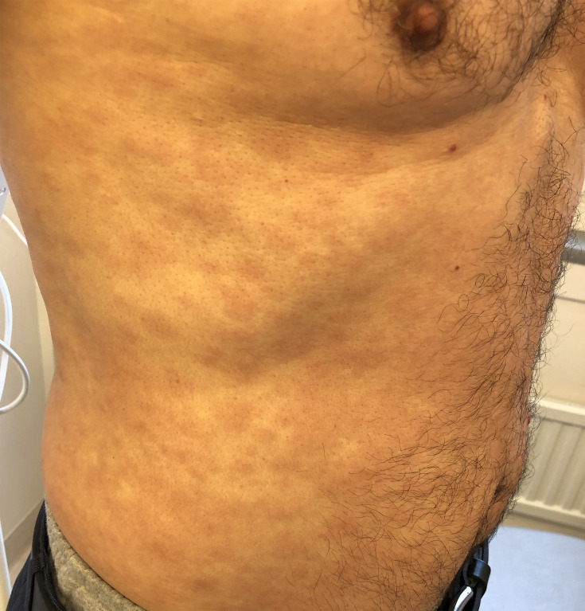
Сосудистые пятна возникают из-за изменений в сосудах сосочкового слоя дермы. Среди них различают гиперемические — временное расширение сосудов, при надавливании стеклом (диаскопии) они бледнеют и исчезают — и телеангиэктазии, паралитическое стойкое расширение сосудов, которое при диаскопии не исчезает.[2, с. 10] Посмотрите на снимок ниже: хорошо видна разветвлённая сосудистая сеть на щеке с телеангиэктазиями, характерная для розацеа.

На этом снимке обратите внимание на красные нити — расширенные капилляры, которые остаются видны при любом освещении. Это и есть телеангиэктазии: сосуды утратили тонус и уже не могут сократиться в ответ на давление.
Геморрагические пятна — третий подтип сосудистых пятен — образуются при выходе крови из сосудистого русла: разрыв стенки или резкое увеличение проницаемости. Кровь пропитывает дерму, и диаскопия здесь ничего не даёт — пятно не бледнеет. Их классифицируют по размеру: петехии — точечные кровоизлияния до 1 см; пурпура — от 1 до 2 см; экхимозы — обширные кровоподтёки больше 2 см; вибицес (vibices) — полосовидные кровоизлияния; суггиллацио (suggillatio) — обширное пропитывание подкожной клетчатки кровью, «синяк» в бытовом понимании.
Пигментные пятна связаны с перераспределением или избыточным отложением меланина — веснушки, хлоазма, витилиго. Искусственные пятна — татуировка и татуаж: краситель введён механически и не исчезает при диаскопии.
Папула, или узелок (papula), — бесполостной инфильтративный элемент, слегка возвышающийся над уровнем кожи. Главное, что нужно запомнить: при разрешении папула не оставляет рубца или рубцовой атрофии. По размеру узелки делят на милиарные — просовидные, 1–3 мм; лентикулярные — чечевицеобразные, 0,5–0,7 см; нумулярные — монетовидные, 1–3 см в диаметре. Папула может залегать в эпидермисе, сосочковом слое дермы или захватывать оба уровня сразу. При ряде дерматозов папулы сливаются, образуя бляшки — как при псориазе.[4, с. 24] По форме они бывают плоскими, полушаровидными или коническими, по консистенции — плотными, тестоватыми, мягкими.[4, с. 24] При поверхностном фолликулите, если он развивается без предшествующего остиофолликулита, сразу образуется фолликулярная воспалительная папула диаметром около 5 мм[3, с. 8]; если же процесс распространяется из уже существующего гнойничка, папула в основании гнойничка достигает более 5–7 мм.[3, с. 8] Эти конкретные числа важны практически: именно нарастание до такого диаметра говорит о переходе поверхностного фолликулита в более глубокую стадию.
Бугорок (tuberculum) внешне напоминает папулу, но устроен принципиально иначе. Он развивается в сетчатом слое дермы и представляет собой очаг продуктивного воспаления — гранулёму, то есть скопление иммунных клеток, отграничивающих возбудителя, которого организм не может уничтожить напрямую.[2, с. 12] Размеры бугорка — от 0,5 до 1 см в диаметре.[4, с. 24] Исход принципиально отличается от папулы: бугорок регрессирует через стадию изъязвления или без неё — но в любом случае оставляет рубец или рубцовую атрофию.[2, с. 12] Бугорки характерны для туберкулёза кожи, лепры, лейшманиоза, третичного сифилиса.[4, с. 24]
Посмотрите на снимок — хорошо видны линейно расположенные гиперпигментированные и гиперкератотические папулы при болезни Дарье.

Обратите внимание на расположение элементов вдоль линий кожного рисунка и их плотную, неровную поверхность — это именно тот случай, когда граница между папулой и бугорком клинически стирается и решает её уже гистология.
Узел (nodus) — самый крупный из бесполостных элементов: от 2 до 10 см и более в диаметре. Он залегает глубоко — в дерме и гиподерме, то есть в подкожной жировой клетчатке. Пальпаторно ощущается как ограниченное образование разной плотности, по размеру — от горошины до куриного яйца. По мере развития патологического процесса узел, как правило, изъязвляется, и после заживления остаются язва или рубец. При гидрадените, например, заболевание начинается именно с появления плотного узла в глубоких слоях кожи, который поначалу определяется только при ощупывании, а затем увеличивается и спаивается с окружающей тканью.[3, с. 19]
На снимке ниже — диссеминированный дерматоз с множественными эритематозными узлами.
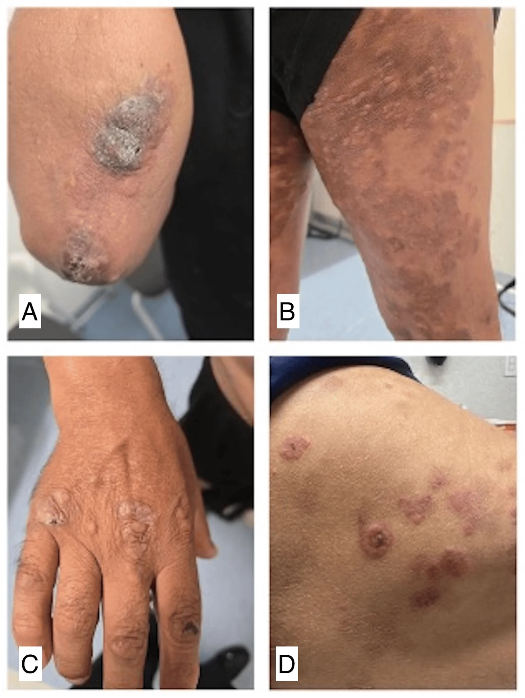
Видите, как узлы выступают над поверхностью кожи и имеют чёткие границы? Именно такой рельеф — следствие глубокого залегания инфильтрата в гиподерме: кожа «вздымается» над ним, но её поверхность поначалу остаётся целой.
Волдырь, или уртика (urtica), — бесполостной элемент, но экссудативный: он возникает за счёт острого ограниченного отёка сосочкового слоя дермы и периваскулярного инфильтрата. Не будь этого быстрого отёка, организму пришлось бы запускать клеточную воспалительную реакцию — а она разворачивается за часы и дни, тогда как аллергический ответ требует немедленного действия. Волдырь решает задачу в минуты. Это плотноватый, возвышающийся над кожей элемент округлой или неправильной формы, розовый, иногда с белесоватым центром, всегда сопровождающийся зудом или жжением.[4, с. 22] Главная его черта — эфемерность: существует от нескольких минут до нескольких часов и исчезает бесследно.[4, с. 22] Возникает обычно как аллергическая реакция немедленного типа на эндо- или экзогенные раздражители — при крапивнице, укусах насекомых, токсидермии.[4, с. 22]
Теперь сведём всё вместе. Посмотрите на таблицу — она показывает, как глубина залегания и характер воспаления определяют судьбу каждого элемента.
| Элемент | Латинское название | Слой залегания | Размер | Исход |
|---|---|---|---|---|
| Пятно | macula | Эпидермис / сосуды сосочкового слоя | Любой | Бесследно (геморрагические — гемосидероз) |
| Папула (узелок) | papula | Эпидермис, сосочковый слой дермы | 1 мм — 3 см | Бесследно (рубца нет) |
| Бугорок | tuberculum | Сетчатый слой дермы | 0,5 — 1 см | Рубец или рубцовая атрофия |
| Узел | nodus | Глубокая дерма и гиподерма | 2 — 10 см и более | Язва, затем рубец |
| Волдырь (уртика) | urtica | Сосочковый слой дермы (отёк) | Вариабелен | Бесследно (минуты–часы) |
Как видите в таблице, переход от папулы к бугорку и узлу — это буквально движение вглубь кожи, и именно эта глубина решает исход. Папула живёт в сосочковом слое и уходит без следа. Бугорок достигает сетчатого слоя, где формирует гранулёму, — и уже оставляет рубец или атрофию. Узел уходит ещё ниже, в гиподерму, и на выходе почти всегда даёт изъязвление, а за ним — рубец. Волдырь и пятно — самые поверхностные: первый существует считанные часы, второй не меняет рельефа вовсе.
Главный вывод раздела: глубина залегания элемента напрямую предсказывает его исход. Пятно и папула проходят бесследно; бугорок и узел — никогда. Это правило работает в диагностике постоянно: рубец на коже там, где раньше был элемент, — сам по себе указание на то, что этот элемент был бугорком или узлом, а не папулой.
Первичные морфологические элементы: полостные
Среди первичных морфологических элементов особую группу составляют полостные — то есть попросту те, внутри которых есть пространство, заполненное жидкостью или гноем. К ним относятся три элемента: пузырёк, пузырь и гнойничок. Каждый из них отличается от других по размеру, глубине залегания, содержимому и тому, что остаётся на коже после разрешения. Именно эти признаки и составляют суть диагностики полостных элементов.
Везикула, или пузырёк (vesicula), — небольшое полушаровидное образование с дном, покрышкой и полостью, заполненной серозным или серозно-геморрагическим содержимым.[4, с. 21] Размер везикулы — до 0,5 см в диаметре.[4, с. 21] Пузырёк располагается в эпидермисе или под ним — интра- либо субэпидермально — и может возникать как на неизменённой коже, как при дисгидрозе, так и на эритематозном фоне, как при герпесе.[4, с. 21]
Образуется везикула двумя основными механизмами. Первый — спонгиоз, то есть попросту межклеточный отёк шиповатого слоя: жидкость раздвигает кератиноциты, между ними накапливается экссудат, и в итоге формируется полость. Именно так возникают пузырьки при экземе и аллергическом дерматите. Второй механизм — баллонирующая дистрофия, то есть попросту разрушение самих клеток с образованием крупных «шаров»-остатков: клетки набухают, теряют связи друг с другом и гибнут, а на их месте остаётся полость. Этот механизм характерен для простого и опоясывающего герпеса. Пузырьки бывают однокамерными, как при экземе, или многокамерными, как при герпесе. После вскрытия на месте везикул остаются мокнущие эрозии, которые затем эпителизируются, не оставляя следов.[4, с. 21]
Булла, или пузырь (bulla), — тот же полостной элемент с дном и покрышкой, но отличается от пузырька большими размерами: от 0,5 см до нескольких сантиметров в диаметре.[4, с. 22] Содержимое серозное или геморрагическое, покрышка может быть напряжённой или дряблой, плотной или тонкой.[4, с. 22]
Пузыри формируются двумя путями. При акантолизе — то есть попросту при разрушении межклеточных «мостиков»-десмосом между кератиноцитами — клетки эпидермиса отрываются друг от друга, и полость оказывается внутри эпидермиса; именно так устроена акантолитическая пузырчатка. При втором пути нарастающий отёк дермы физически отслаивает эпидермис от дермы целиком, и пузырь располагается субэпидермально — как, например, при простом контактном дерматите. После вскрытия пузырей также остаются эрозии, которые эпителизируются без образования рубца.[4, с. 22]
Пустула, или гнойничок (pustula), — полостной элемент, заполненный не серозным, а гнойным содержимым, выступающий над окружающей кожей и окружённый воспалительным венчиком.[2, с. 12] По связи с волосяным фолликулом пустулы делят на фолликулярные и нефолликулярные, и это разделение напрямую указывает на возбудителя.
Фолликулярная пустула — гнойничок, расположенный в устье волосяного фолликула и пронизанный в центре волосом. Такие пустулы типичны для стафилококковых поражений: остиофолликулита, фолликулита, вульгарного сикоза. Поверхностные фолликулярные гнойнички располагаются в эпидермисе или сосочковом слое дермы, захватывая устье или до двух третей длины фолликула.[4, с. 22] Исход поверхностной эпидермальной пустулы — временная депигментация; глубокой дермальной пустулы — рубец.
Нефолликулярные пустулы характерны для стрептококковых поражений: стрептококк, в отличие от стафилококка, не поражает сально-волосяной фолликул, а атакует гладкую кожу, выделяя протеолитические ферменты, которые лизируют межклеточные связи поверхностных слоёв эпидермиса. Поверхностная нефолликулярная пустула называется фликтеной — это дряблый, вялый пузырь с мутноватым содержимым, окружённый венчиком гиперемии. В зонах с тонким роговым слоем — на лице, шее — фликтена выглядит именно вяло и дряблой; там, где есть гиперкератоз, например на ладонях и подошвах, стрептококковые пузыри могут иметь напряжённый вид и плотную покрышку. При регрессе фликтены экссудат ссыхается в корки, после их отторжения остаётся временная де- или гиперпигментация — рубца нет.[4, с. 22]
Глубокая нефолликулярная пустула получила название эктима (ecthyma) — это эпидермодермальная пустула с ограниченным некрозом подлежащего участка дермы.[3, с. 5] Элементы эктимы крупные, диаметром 2 см и более.[4, с. 22] После разрешения на их месте остаются рубцы.[4, с. 22]
Посмотрите на сводную таблицу ниже — она даёт возможность сравнить три полостных элемента сразу по четырём признакам: размеру, содержимому, уровню расположения и исходу.
| Элемент | Размер | Содержимое | Уровень в коже | Исход |
|---|---|---|---|---|
| Везикула (vesicula) | до 0,5 см | серозное, серозно-геморрагическое | интра- или субэпидермально | эрозия → эпителизация без следа |
| Булла (bulla) | от 0,5 см до нескольких см | серозное, геморрагическое | интраэпидермально (акантолиз) или субэпидермально (отёк) | эрозия → эпителизация без рубца |
| Пустула (pustula) | варьирует | гнойное | эпидермис / дерма (фолликулярные и нефолликулярные) | поверхностная → пигментация; глубокая (эктима) → рубец |
Как видите в таблице, везикула и булла — родственники: обе содержат серозную жидкость и обе заживают без рубца. Разница между ними — только в размере: до 0,5 см это везикула, всё, что крупнее, — булла. Лекция кафедры уточняет верхнюю границу пузырька иначе: до 5 мм, — что совпадает с данными учебника. Пустула стоит особняком: её содержимое гнойное, а исход зависит от глубины. Поверхностная эпидермальная пустула оставляет временную депигментацию; дермальная — рубец. Эктима, диаметром от 2 см и более, уходит в дерму и всегда рубцуется.
Главный вывод раздела таков: полостной элемент на коже — это сигнал о механизме повреждения. Везикула говорит о спонгиозе или баллонирующей дистрофии в эпидермисе; булла — об акантолизе или отёке, отслоившем весь эпидермис; фолликулярная пустула указывает на стафилококк, нефолликулярная — на стрептококк. Именно поэтому морфологический разбор элементов — не формальность, а ключ к этиологии и прогнозу.
Вторичные морфологические элементы кожи
Первичные элементы — это то, что кожа делает сама в ответ на болезнь. Вторичные — это то, что остаётся или возникает после: после расчёса, после вскрытия пузыря, после заживления язвы. Именно поэтому их называют вторичными: они всегда следствие, а не начало процесса. Понять, какой элемент вторичный и почему он именно такой, — значит восстановить в голове всю историю болезни от первого высыпания до рубца.
Разберём каждый из них — сначала по существу, потом сведём всё вместе в таблицу.
Нарушения целостности кожи
Эрозия (erosio) — поверхностный дефект: нарушение целостности кожного покрова в пределах эпидермиса.[4, с. 25] Она возникает там, где вскрылся первичный полостной элемент — пузырёк, пузырь или поверхностная пустула. Пузырёк (vesicula), как вы помните из предыдущего раздела, имеет диаметр до 0,5 см — именно такой по размеру и форме будет эрозия на его месте. Главное, что нужно запомнить про эрозию: она заживает без рубца, путём эпителизации.[4, с. 25] Дерма не пострадала — значит, рубцевания не будет.
Язва (ulcus) — дефект уже глубокий: нарушение целостности в пределах соединительнотканного слоя дермы, а иногда и подлежащих тканей.[4, с. 25] Возникает при вскрытии бугорков, узлов или глубоких пустул.[4, с. 25] В язве различают дно и края — и то и другое нужно описывать: края могут быть мягкими (туберкулёз) или плотными (рак кожи), дно — гладким или неровным.[2, с. 14] Язва всегда заживает с образованием рубца.[2, с. 14] Это принципиальное отличие от эрозии. При эктиме, например, элементы крупные — диаметром 2 см и более[3, с. 26] — и после их заживления неизбежно остаётся рубец.
Трещина (fissura) — линейный разрыв кожи, который возникает из-за потери эластичности при длительно существующей инфильтрации.[2, с. 15] Поверхностная трещина залегает в пределах эпидермиса и заживает бесследно; глубокая захватывает и дерму, нередко кровоточит с образованием геморрагических корок — и оставляет рубец.[4, с. 25]
Экскориация (excoriatio), или ссадина, — травматическая эрозия, возникающая в результате механических повреждений: расчёсов, царапин.[2, с. 14] При зудящих заболеваниях экскориации часто покрываются чёрно-бурыми корками и расположены линейно — след ногтя хорошо виден.[2, с. 14] Исход зависит от глубины: поверхностные проходят бесследно, глубокие оставляют гипо- или гиперпигментацию.[4, с. 25]
Рубец и лихенификация
Рубец (cicatrix) — это новообразованная ткань на месте разрушения дермы или слизистой оболочки, состоящая в основном из коллагеновых волокон.[2, с. 16] Его поверхность гладкая и ровная, без кожного рисунка. Что особенно важно: в рубце отсутствуют все придатки кожи — волосяные фолликулы, потовые и сальные железы, дермальные сосочки.[2, с. 16] Уменьшено количество сосудов и нервных окончаний.
Рубцы бывают двух видов. Атрофический рубец располагается ниже уровня окружающей кожи — он как бы западает. Именно такой остаётся после эктимы: в течение 2–4 недель она постепенно рубцуется, оставляя атрофический рубец с окружающей гиперпигментацией.[3, с. 26] Гипертрофический рубец, напротив, возвышается над поверхностью кожи — это избыточное разрастание соединительной ткани. Посмотрите на снимки чуть ниже — на них хорошо видна разница между атрофическими ямками и нормальной поверхностью щеки.


На этих фотографиях — 28-летняя пациентка с выраженными атрофическими рубцами постакне на коже щёк. Обратите внимание на характерные западающие ямки: это и есть атрофические рубцы — дерма здесь была разрушена глубоким воспалением, и на её месте образовалась соединительная ткань, которой оказалось меньше, чем было нормальной кожи. Рисунок кожи в этих участках не просматривается, поры не видны — придатки отсутствуют.
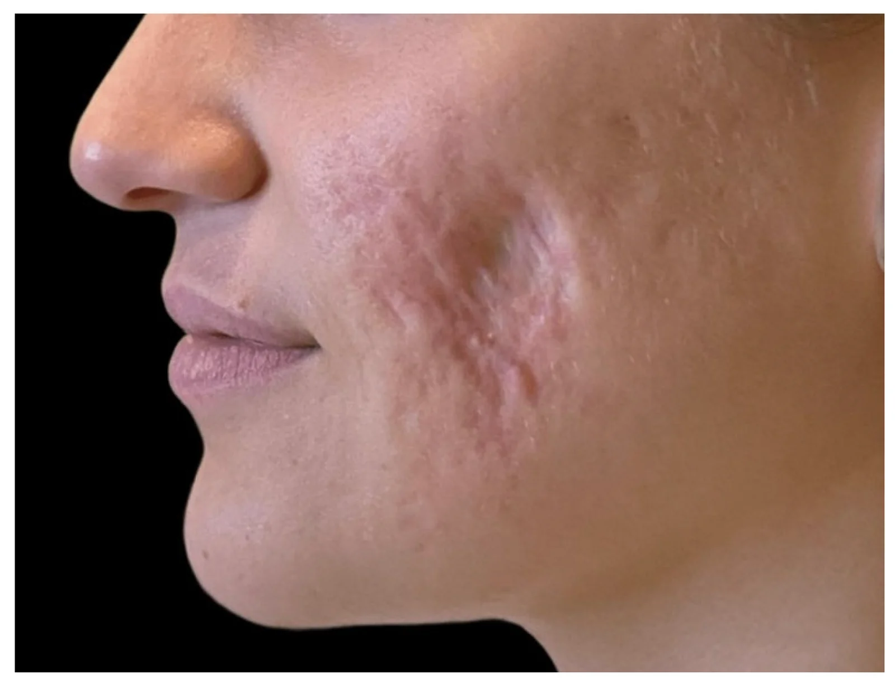
На соседнем снимке — атрофия кожи и подкожной клетчатки левой щеки. Кожа здесь буквально ввалилась внутрь: это крайний вариант того же процесса, но уже захватывающий подлежащие ткани. Ключевое правило: рубец возникает всегда, когда повреждена дерма. Если поражение ограничено эпидермисом — следа не остаётся.
Лихенификация (lichenificatio) — утолщение и огрубение кожи с усилением её рисунка, возникающее при длительном расчёсывании или трении. Кожа при лихенификации напоминает на ощупь толстую шероховатую ткань — грубую мешковину, которую долго мяли в руках: рисунок стал резким, борозды углубились, поверхность жёсткая. Это сравнение точно передаёт именно текстуру, а не внешний вид — именно текстура при лихенификации и меняется принципиально.
Наслоения на коже
Чешуйка (squama) возникает в результате гипер- или паракератоза и представляет собой отторгающиеся верхние ряды рогового слоя.[2, с. 13] Чешуйки бывают разного цвета и величины; по характеру шелушения различают муковидное, отрубевидное и пластинчатое. Когда чешуйки отторгаются пластами — говорят об эксфолиативном шелушении.[2, с. 13]
Корка (crusta) — продукт сгущения и высыхания на коже серозного, гнойного или геморрагического экссудата.[2, с. 16] Цвет корки прямо указывает на характер экссудата: медово-жёлтые корки — признак стрептококкового импетиго, зеленоватые — нагноения, тёмно-коричневые — геморрагического пропитывания. При подостром или хроническом течении пиодермии поверхность очагов, покрытую гнойными корками, обрабатывают тампонами, смоченными 3%-ным водным раствором перекиси водорода.
Вегетация (vegetationes) возникает в результате разрастания сосочков дермы с одновременным утолщением шиповатого слоя эпидермиса — этот процесс называют папилломатозом.[2, с. 16] Внешне вегетации напоминают петушиные гребешки или цветную капусту — мягкие, дольчатые разрастания, возвышающиеся над поверхностью кожи.[2, с. 16] Вегетации могут быть и первичными: пример — остроконечные кондиломы.
Вторичная пигментация (dischromia cutis) — изменение окраски кожи на месте бывшего первичного элемента в результате временного перераспределения меланина. Может быть как гиперпигментацией (тёмные пятна после папул красного плоского лишая), так и гипопигментацией — псевдолейкодерма на месте псориатических папул.
Таблица вторичных элементов
| Элемент | Уровень нарушения | Исход | Характерные заболевания |
|---|---|---|---|
| Эрозия | Эпидермис | Бесследная эпителизация | Пузырчатка, импетиго, герпес |
| Экскориация | Эпидермис (поверхностная) / эпидермис + дерма (глубокая) | Бесследно или пигментация | Нейродермит, чесотка, атопический дерматит |
| Трещина поверхностная | Эпидермис | Бесследная эпителизация | Экзема, нейродермит |
| Трещина глубокая | Эпидермис + дерма | Рубец | Врождённый сифилис, хроническая экзема |
| Язва | Дерма и глубже | Рубец (всегда) | Эктима, фурункул, трофическая язва |
| Рубец атрофический | Дерма (дефицит ткани) | Стойкое изменение | Постакне, эктима |
| Рубец гипертрофический | Дерма (избыток ткани) | Стойкое изменение | Ожоги, глубокие травмы |
| Чешуйка | Роговой слой | Отторжение без следа | Псориаз, себорея, дерматофития |
| Корка | Поверхность (наслоение) | Отпадает, обнажая эрозию или язву | Импетиго, эктима, пиодермия |
| Вегетация | Дерма + эпидермис (разрастание) | Персистирование или хирургическое удаление | Кондиломы, вегетирующая пузырчатка |
| Лихенификация | Эпидермис + дерма (утолщение) | Частичный регресс при лечении | Нейродермит, хроническая экзема |
| Вторичная пигментация | Эпидермис (меланин) | Недели — месяцы, затем исчезает | Псориаз, красный плоский лишай |
Как видите в таблице, логика проста и её стоит запомнить именно в таком виде: глубина поражения определяет исход. Эрозия и поверхностная трещина — в пределах эпидермиса — заживают бесследно, потому что ростковый слой цел. Язва и глубокая трещина уходят в дерму — дерма не умеет восстанавливаться полностью, поэтому на её месте всегда вырастает коллагеновый рубец. Если коллагена оказалось меньше нормы — рубец западает (атрофический); если больше — выбухает (гипертрофический). Экскориация занимает промежуточное положение: её исход зависит от того, дошёл ли расчёс до дермы.
Остальные вторичные элементы — чешуйка, корка, вегетация, лихенификация и вторичная пигментация — не нарушают целостности кожи в строгом смысле: они либо наслаиваются поверх неё, либо перестраивают уже существующие структуры. Поэтому их исходы принципиально иные: корка отпадает и обнажает то, что под ней; чешуйка слущивается; вторичная пигментация проходит за недели или месяцы. Вегетация и лихенификация упорнее — они могут существовать долго и частично регрессировать только при лечении основного заболевания.
Принципы диагностики кожных заболеваний
Кожа — единственный орган, доступный прямому осмотру без каких-либо инструментов. Казалось бы, это делает дерматологию простой. На деле же, с учётом стадийности течения сотен дерматозов, врачу приходится распознавать тысячи вариантов изменений кожи.[4, с. 26] Именно поэтому осмотр — не беглый взгляд, а строго упорядоченная процедура.
Начинают с полного раздевания пациента. Осматривают весь кожный покров: и поражённые участки, и те, что выглядят здоровыми. Не забывают про придатки — волосы и ногти, — а также область половых органов и слизистую рта. Свет должен быть рассеянным дневным: лампа накаливания искажает оттенки красного и жёлтого, и вы рискуете принять розовое пятно за красное или упустить лёгкую желтушность. Дополнительный боковой источник света помогает понять, возвышается ли элемент над поверхностью кожи; лупа — обнаружить чесоточные ходы и сетку Уэкхема.
После общего осмотра переходят к описанию очага — и здесь начинается то, что называется локальным статусом: формализованное описание поражения кожи, которое фиксируется в истории болезни и служит точкой отсчёта для оценки динамики лечения. Локальный статус — это не субъективные впечатления («выглядит воспалённым»), а набор конкретных признаков, каждый из которых имеет диагностическое значение.
Первым делом устанавливают характер воспаления: острое, подострое или хроническое.[4, с. 29] Затем — локализацию с указанием преимущественных участков поражения и мест, свободных от сыпи, распространённость (обильная, скудная, единичные элементы) и симметричность очагов. Симметричность — важная подсказка: многие системные и аллергические дерматозы дают зеркальные высыпания, тогда как инфекционные процессы чаще асимметричны. Имеет значение и приуроченность к структурам кожи: стафилококковые поражения тяготеют к сально-волосяным фолликулам и потовым железам, стрептококковые — к гладкой коже вне придатков.
Затем описывают каждый элемент по единой схеме: размер, форма, границы, цвет, поверхность, консистенция. Размер принято указывать точно. Так, геморрагические пятна делят на петехии — до 1 см, пурпуру — 1–2 см и экхимозы — больше 2 см. Пузырёк (vesicula) по определению не превышает 0,5 см в диаметре — и именно этим он отличается от пузыря (bulla), а не только механизмом образования. Гнойничок при остиофолликулите имеет диаметр до 2–3 мм конусовидной или полушаровидной формы. Сравните с эктимой: её элементы крупные, диаметром 2 см и более. Разница в размере сразу указывает на разную глубину поражения.
Теперь — разбор случая: три шага, которые показывают, как эти признаки работают вместе.
Шаг первый: что видит врач. В области затылка на границе роста волос — багрово-красный воспалительный инфильтрат конусовидной формы, возвышающийся над уровнем кожи, размером 5×5 см. Поверхность напряжённая, в центре просматривается несколько устьев фолликулов. Элемент один, болезнен при пальпации.
Шаг второй: что из этого следует. Локализация — область, подверженная трению одежды. Размер и глубина инфильтрата, вовлечение нескольких фолликулов, гнойно-некротический характер воспаления — всё это признаки карбункула, глубокой стафилодермии. Элемент единственный — сыпь мономорфная, то есть представлена одним видом первичного элемента. Никаких пузырей рядом, никаких чешуек — только воспалительный узел.
Шаг третий: что делает врач дальше. Один морфологический элемент ещё не диагноз: нужно исключить другие глубокие пиодермии и уточнить, нет ли системных предрасполагающих факторов — сахарного диабета, иммунодефицита. Назначают бактериологическое исследование отделяемого, общий анализ крови; при необходимости — биопсию с гистологическим исследованием.
Отдельного внимания заслуживает характер самой сыпи. Когда присутствует один вид первичного элемента — говорят о мономорфной сыпи. Когда одновременно обнаруживают два и более разных первичных элемента — пятна, папулы, везикулы вместе, — сыпь называют полиморфной, а такой полиморфизм — истинным: он отражает разные патогенетические механизмы, действующие одновременно, как при экземе.[4, с. 24] Посмотрите на это внимательнее: именно сочетание первичных элементов определяет понятие истинного полиморфизма, и именно по нему студенты чаще всего допускают ошибку.
Есть и второй вид — эволюционный полиморфизм. Здесь первичный элемент был один, но в процессе эволюции он породил разные вторичные элементы: чешуйки, корки, трещины, экскориации.[4, с. 24] Сыпь выглядит пёстрой, но пестрота обманчива — в основе лежит один процесс. Именно поэтому в локальном статусе важно разграничить: перед вами несколько разных первичных элементов или один первичный и его производные.
Чёткое разграничение истинного и эволюционного полиморфизма — ключ к правильному диагнозу, потому что оно определяет, один патогенетический механизм запущен или несколько, и, следовательно, насколько сложным будет лечение.
Принципы лечения кожных заболеваний
Лечение любого дерматоза строится на трёх уровнях, и понять их соотношение — значит понять логику дерматологии. Первый уровень — этиотропная терапия (от греч. aitia — причина): она направлена прямо на возбудителя или повреждающий агент. Антибиотик при пиодермии, противогрибковый препарат при дерматофитии — это этиотропное воздействие. Второй уровень — патогенетическая терапия: она не убивает возбудителя, а разрывает цепочку механизмов болезни. Коррекция углеводного обмена при рецидивирующих гнойничках, иммуностимуляция, санация очагов хронической инфекции — всё это воздействие на почву, которая даёт болезни расти. Третий уровень — симптоматическая терапия: она снимает боль, зуд, жжение, но не меняет ни причину, ни механизм. На практике все три уровня часто работают одновременно, и задача врача — не выбрать один, а правильно расставить приоритеты.
Стадия заболевания меняет тактику не меньше, чем диагноз. Острое мокнущее воспаление — одна логика, подострое с корками — другая, хронический инфильтрат — третья. Лекарственная форма наружного средства подбирается именно под стадию, а не под нозологию. Это правило в дерматологии настолько принципиально, что его нарушение приводит к обратному эффекту: мазь на мокнущую поверхность усиливает воспаление, примочка на сухую хроническую бляшку её раздражает.
Посмотрите, как выглядит эта логика в систематизированном виде, — Таблица ниже показывает соответствие лекарственных форм характеру морфологических элементов и стадии процесса: каждая форма занимает свою нишу, и ни одна не является универсальной.
| Лекарственная форма | Состав и свойства | Показания по характеру элементов | Противопоказания / ограничения |
|---|---|---|---|
| Примочка | Водный раствор (резорцин, нитрат серебра, борная кислота, фурацилин); холодная | Острое мокнутие, отёк, жжение, зуд, пузыри | Сухие, хронические, инфильтративные элементы |
| Взбалтываемая взвесь (болтушка) | 30–50% порошка + 50–70% жидкости; охлаждает за счёт испарения воды | Подострое воспаление, эритема без мокнутия, зуд | Волосистые зоны (склеивает волосы), выраженное мокнутие |
| Паста | Равные части порошка и жира; менее жирная, чем мазь | Подострое воспаление, переход от мокнутия к сухости | Волосистые части тела, глубокие инфильтраты |
| Крем | Эмульсия типа «масло в воде» или «вода в масле»; лёгкая консистенция | Подострое и хроническое воспаление, умеренная сухость | Выраженное острое мокнутие |
| Мазь | Жировая основа (вазелин, ланолин и др.) без воды; создаёт окклюзию | Хронические инфильтративные элементы, выраженная сухость, лихенификация | Острое воспаление, мокнутие, инфекционные очаги без антибактериального компонента |
| Присыпка (пудра) | Тальк, оксид цинка, крахмал; гигроскопична | Подострое воспаление, опрелости, складки кожи, волосистые зоны | Сухие трещины, глубокие поражения; нельзя втирать |
Примочка — лекарственная форма для острейших состояний. Холодный водный раствор антисептика накладывается на несколько слоёв марли, которую меняют по мере согревания. Холод сужает сосуды, уменьшает отёк и снимает жжение. Мазь — полная противоположность: жировая основа без воды создаёт плёнку, которая не даёт коже терять влагу, размягчает роговой слой и помогает действующему веществу проникнуть в глубину. Именно поэтому мазь при мокнущем процессе — ошибка: она запечатает воспалённую поверхность и усилит мацерацию. Крем занимает промежуточное положение — эмульсия содержит и водную, и жировую фазу, поэтому легче переносится на обширных участках и в тёплое время года. Паста — это нечто среднее между присыпкой и мазью: порошковый компонент делает её плотнее и суше, чем мазь, поэтому паста хорошо работает на стадии перехода от острого к подострому. Болтушка, она же взбалтываемая взвесь, состоит из 30–50% порошка и 50–70% жидкости — перед нанесением её встряхивают, а сам эффект охлаждения возникает за счёт испарения воды с поверхности кожи.

Ещё одно правило наружной терапии, которое лектор формулирует отдельно: начинать со слабых концентраций действующего вещества и наращивать их постепенно. Кожа с воспалённым барьером всасывает препарат интенсивнее здоровой, и то, что переносимо на интактной коже, на мокнущей эрозии может дать раздражение или системное всасывание.
Системная терапия подключается, когда наружной недостаточно или когда она принципиально не может решить задачу. Антибиотики при пиодермиях показаны при множественных очагах, быстром распространении, появлении лимфангита, болезненных лимфоузлов, а также при общей реакции организма — лихорадке, ознобе, слабости. Глубокие поражения лица — отдельное и особое показание: анатомические анастомозы лицевых вен с кавернозным синусом делают даже, казалось бы, локальный фурункул потенциальным источником менингита.[3, с. 31] Выбор антибиотика оптимально проводить после посева с определением чувствительности; пенициллины обладают наибольшей сенсибилизирующей активностью и нежелательны у больных с атопией или экземой.[3, с. 31] При абсцедирующих инверсных угрях, помимо антибиотиков, назначают изотретиноин по 0,5–1 мг на 1 кг массы тела в сутки в течение 12–16 недель.[3, с. 30]
Кортикостероиды системно — это патогенетическая терапия при воспалительно-аллергических дерматозах: экземе, атопическом дерматите, буллёзных поражениях. Они подавляют иммунное воспаление там, где этиотропного лечения нет или оно ещё не подействовало. При хронических атипических пиодермиях короткие курсы глюкокортикостероидов комбинируют с антибиотиками, поскольку одна антибактериальная терапия в этих случаях существенного эффекта не даёт.[3, с. 30] Антигистаминные препараты — это симптоматика: они блокируют H₁-рецепторы и снимают зуд при крапивнице, аллергических реакциях, зудящих дерматозах. На механизм болезни они не влияют, но облегчают состояние и снижают расчёсы, через которые возможно инфицирование.

Взгляните на снимок выше: на нём представлены этапы лазерного лечения гиперпигментированного рубца на щеке. Лазерная терапия — пример того, как современное лечение в дерматологии сочетает все три уровня воздействия: разрушение патологической ткани (патогенетический уровень), стимуляция синтеза нормального коллагена и депигментация (тоже патогенез), при этом субъективные ощущения — боль, зуд рубца — уходят как симптоматический бонус. Лечение не является этиотропным, поскольку рубец уже сформирован, но именно комбинация уровней воздействия даёт видимый результат от сеанса к сеансу.
Дети — отдельная история, и здесь разница в масштабе принципиальна. Поверхность тела ребёнка в пересчёте на килограмм массы в 2–3 раза больше, чем у взрослого. Это означает, что при нанесении наружного препарата на ту же площадь поражения ребёнок получает в 2–3 раза большую дозу действующего вещества на килограмм, чем взрослый. Именно здесь работает «порядок величин»: кажущаяся мелочь — чуть большая площадь тела на единицу массы — оборачивается реальным системным всасыванием кортикостероидной мази там, где у взрослого оно было бы незначимым. Поэтому у детей: концентрации действующих веществ снижают, площадь нанесения ограничивают, окклюзионные повязки под мазь применяют с осторожностью, а ряд препаратов (фторированные кортикостероиды, тетрациклины) имеют возрастные ограничения. Лекарственную форму тоже подбирают с учётом возраста: кремы и лосьоны предпочтительнее жирных мазей, особенно в складках и на лице.
Главный вывод раздела: форма препарата — не упаковка, а часть лечения. Правильное действующее вещество в неправильной лекарственной форме даёт неправильный результат. Мокнутие требует примочки, сухость и инфильтрат — мази, переходные состояния — пасты или крема. Это правило работает независимо от нозологии и стадии — и именно поэтому его изучают раньше, чем конкретные болезни.
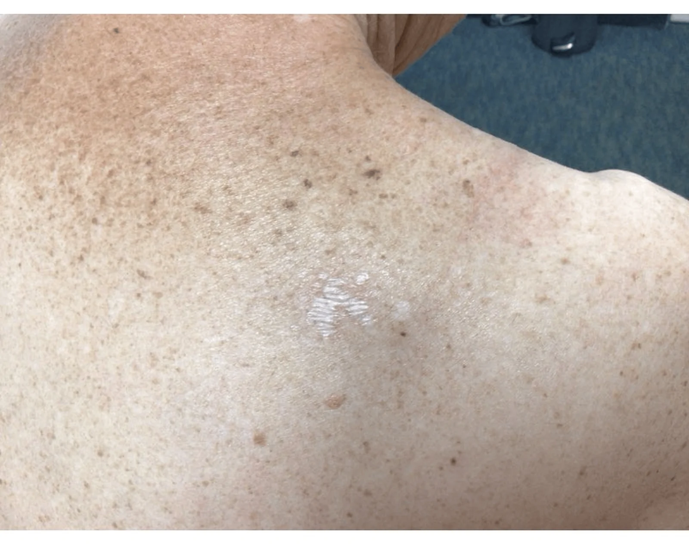
Пиодермия: этиология, классификация, патогенез
Кожа здорового человека покрыта миллионами бактерий — и это норма. Стафилококки и стрептококки живут на её поверхности постоянно, не причиняя вреда. Кажется, что болезнь начинается тогда, когда эти бактерии каким-то образом «усиливаются» или становятся агрессивнее сами по себе. На деле же решает не микроб, а барьер: пока кожа цела и иммунитет работает, даже откровенно патогенный штамм остаётся на поверхности. Болезнь начинается тогда, когда барьер ломается — и микроб получает доступ к живым тканям.
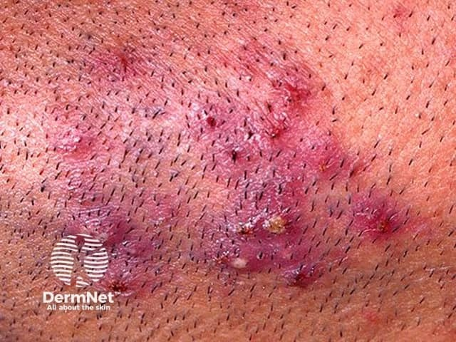
Пиодермия (от греч. pyon — гной, derma — кожа) — группа инфекционных заболеваний кожи, вызванных гноеродными микроорганизмами, прежде всего стафилококками и стрептококками. Это самая распространённая группа дерматозов во всех возрастных группах: стафилококки и стрептококки обнаруживаются повсюду — в воздухе, пыли, на одежде и на самой коже человека.
Два главных возбудителя занимают разные экологические ниши. Стафилококки — факультативные анаэробы — колонизируют верхние слои эпидермиса, особенно плотно заселяя устья волосяных фолликулов, сальных и потовых желёз. Поэтому стафилококковые поражения тяготеют к придаткам кожи. Стрептококки, напротив, держатся на поверхности гладкой кожи без связи с фолликулами — чаще на лице и в естественных складках. Это различие в топографии напрямую определяет и клиническую картину, и классификацию.
Пиодермии делят по этиологическому принципу на три группы: стафилодермии (поражения, вызванные стафилококками), стрептодермии (вызванные стрептококками) и смешанные — стрепто-стафилодермии.[3, с. 3] Внутри каждой группы формы разграничивают по глубине поражения: поверхностные захватывают эпидермис и верхний слой дермы, глубокие распространяются в собственно дерму и гиподерму; и те, и другие могут протекать остро или хронически.[3, с. 3]
Посмотрите, как это распределение выглядит в целом. Среди стафилодермий поверхностные острые формы — остиофолликулит, поверхностный фолликулит, буллёзное импетиго у детей. Фурункул — острое гнойно-некротическое воспаление волосяного фолликула и окружающих тканей с образованием некротического стержня — относится уже к глубоким стафилодермиям, как и карбункул — слияние нескольких соседних фурункулов с образованием обширного некроза.[3, с. 3] Среди стрептодермий поверхностные формы представлены прежде всего импетиго — заразным поверхностным поражением, при котором первичным элементом служит фликтена: дряблый, ненапряжённый пузырь с тонкой покрышкой, наполненный серозно-гнойным содержимым. Глубокая стрептодермия — эктима: язвенное поражение, проникающее через эпидермис в дерму и оставляющее рубец.[3, с. 3] Смешанные стрепто-стафилодермии, например вульгарное импетиго, сочетают черты обоих возбудителей.


Факторы риска делятся на экзогенные и эндогенные. К экзогенным относятся любые нарушения целостности кожи: микротравмы, расчёсы, потёртости, порезы, укусы насекомых, а также мацерация рогового слоя при избыточной потливости и загрязнение кожи промышленными веществами.[3, с. 2] Эндогенные факторы — эндокринопатии (сахарный диабет, гиперкортицизм, гиперандрогения), хронические очаги инфекции, хронические интоксикации, нарушения питания и иммунодефицитные состояния: лечение глюкокортикоидами, иммунодепрессантами, ВИЧ-инфекция, лучевая терапия.[3, с. 3] Все они сходятся в одном итоге — снижении гуморального и клеточного иммунитета и ослаблении защитной функции кожи.
Понять патогенез проще, если идти от двух сторон одновременно: вирулентность возбудителя и реактивность организма. Стафилококки вырабатывают несколько ключевых факторов агрессии. Эксфолиатин — токсин, расщепляющий десмоглеин-1 в зернистом слое эпидермиса: именно он вызывает отслойку поверхностных слоёв кожи, которую мы видим при буллёзных формах стафилодермии и стафилококковом синдроме ошпаренной кожи. Лейкоцидин разрушает нейтрофилы и макрофаги — первую линию клеточной защиты, — давая бактериям возможность размножаться в тканях без немедленного уничтожения фагоцитами. Реактивность же макроорганизма во многом определяется состоянием иммунной системы кожи: Т-лимфоциты составляют 90% всех лимфоцитов кожи и располагаются в эпидермисе и верхних слоях дермы — именно там, куда первыми проникают возбудители.[1, с. 17] Их дефицит или функциональная недостаточность при любом из перечисленных эндогенных факторов резко облегчает развитие пиодермии.
В условиях нормального гомеостаза резидентная микрофлора кожи работает как «биологический тормоз»: слабокислая pH водно-липидной мантии и микробный антагонизм удерживают патогенные штаммы в меньшинстве.[3, с. 2] Системные иммунные и эндокринные нарушения меняют химизм пота и кожного сала, сдвигают этот баланс — и патогенные стафилококки с стрептококками занимают господствующее положение, нередко вступая в ассоциацию с грамотрицательной флорой.[3, с. 2] Таким образом, пиодермия — это всегда результат одновременного действия двух сил: вирулентности микроба и слабости барьера. Лечение, направленное только против возбудителя и оставляющее в стороне предрасполагающие факторы, неизбежно ведёт к рецидиву.
Пиодермия: клиника, диагностика и лечение
Пиодермии — группа гнойных заболеваний кожи, вызванных прежде всего стафилококками и стрептококками. Различают три большие группы: стафилодермии, стрептодермии и смешанные стрептостафилодермии; каждая из них делится на поверхностные и глубокие формы.[4, с. 43] Стафилококки поражают сально-волосяные фолликулы и потовые железы, вызывая гнойное или гнойно-некротическое воспаление. Стрептококки, напротив, обходят фолликул стороной и поражают гладкую кожу, выделяя серозный экссудат.


Посмотрите на Таблицу 1 — там собраны все основные нозологические формы: возбудитель, глубина поражения, первичный элемент, исход и принцип лечения. Каждую строку стоит прочитать, потому что именно различия между ними чаще всего и проверяются. Ниже те же сведения разобраны подробно.
| Нозология | Возбудитель | Глубина | Первичный элемент | Исход | Лечение |
|---|---|---|---|---|---|
| Остиофолликулит | Staphylococcus aureus | Устье фолликула (поверхностное) | Фолликулярная пустула 2–3 мм | Корочка, гиперпигментация; без рубца | Антисептики местно |
| Фолликулит поверхностный | Staphylococcus aureus | Верхняя часть фолликула | Воспалительная папула >5–7 мм | Корочка; без рубца | Антисептики, антибиотические мази |
| Фолликулит глубокий / Фурункул | Staphylococcus aureus | Весь фолликул + перифолликулярная дерма | Болезненный узел, некротический стержень | Рубец | Системные антибиотики, хирургическое вскрытие при абсцедировании |
| Карбункул | Staphylococcus aureus | Несколько фолликулов + дерма + гиподерма | Плотный болезненный инфильтрат с множеством некротических стержней | Грубый рубец | Системные антибиотики + хирургия |
| Гидраденит | Staphylococcus aureus | Апокриновые потовые железы | Болезненный узел в подмышечной, паховой области | Абсцесс, рубец | Системные антибиотики + хирургия |
| Импетиго / фликтена | Streptococcus pyogenes | Поверхностное (эпидермис) | Вялый пузырь (фликтена) → медово-жёлтая корка | Без рубца (<1 нед.) | Антисептики, антибиотические мази; при осложнениях — системно |
| Рожа | Streptococcus pyogenes | Дерма, лимфатические сосуды | Отёчная эритема с чёткой границей | Лимфостаз, рецидив | Системные пенициллины или макролиды |
| Эктима | Streptococcus pyogenes | Эпидермис + дерма (глубокое) | Эпидермодермальная пустула ≥2 см с некрозом дермы | Рубец | Системные антибиотики + санация язвы |
Стафилодермии
Остиофолликулит — воспаление устья волосяного фолликула — проявляется небольшим гнойничком диаметром до 2–3 мм конусовидной или полушаровидной формы с мутным желтоватым содержимым. Через 2–3 дня пустула подсыхает в желтовато-бурую корочку, после которой может остаться лёгкая гиперпигментация — и не более того. Рубца не бывает. Если же присоединяется мацерация или трение, остиофолликулит способен углубиться и перейти во фолликулит.[3, с. 7]

Фолликулит — это гнойное воспаление волосяного фолликула, захватывающее либо его верхнюю часть (поверхностный), либо весь фолликул целиком (глубокий).[3, с. 7] При поверхностном фолликулите процесс распространяется в глубь фолликула, и рядом с гнойничком появляется болезненная плотная воспалительная папула диаметром более 5–7 мм.[3, с. 7] Когда поверхностный фолликулит развивается без предшествующего остиофолликулита, сразу образуется фолликулярная папула около 5 мм.[3, с. 7] Глубокий фолликулит оставляет рубец — поверхностный, как правило, нет.
Фурункул — острое гнойно-некротическое воспаление всего волосяного фолликула вместе с окружающей перифолликулярной тканью. Начинается как плотный болезненный узел, а через 3–4 суток в центре инфильтрата начинает определяться флюктуация и намечается формирование гнойного свища. Сердцевиной фурункула служит некротический стержень — стержень отторгается, оставляя кратерообразный дефект, заживающий рубцом. Не будь отграниченного гнойно-некротического расплавления, инфекция расползалась бы по дерме без границ — как при роже. Именно возможность формировать стержень и ограничивает процесс.
Карбункул — слияние нескольких фурункулов в единый мощный инфильтрат, захватывающий дерму и гиподерму. На поверхности образуется не один, а несколько гнойных свищей; кожа над инфильтратом приобретает синюшно-багровый цвет. Карбункул всегда сопровождается выраженной болью и общими симптомами — лихорадкой, интоксикацией. Исход — грубый рубец; без хирургической помощи процесс может осложниться флебитом и сепсисом.
Гидраденит — гнойное воспаление апокриновых потовых желез, расположенных в подмышечных ямках, паховых складках и перианальной зоне. Начинается с болезненного плотного узла в глубине кожи; узел постепенно размягчается и вскрывается густым сливкообразным гноем. Волосяной фолликул при этом не вовлекается — что и отличает гидраденит от фурункула. Рецидивирующий гидраденит приводит к формированию грубых рубцов и свищевых ходов.
Стрептодермии
Стрептококки действуют иначе: они атакуют гладкую кожу, не трогают фолликул и выделяют серозный экссудат. Основным первичным элементом служит поверхностный пузырь. Там, где роговой слой тонкий, пузырь выглядит вялым и дряблым — его называют фликтеной.[3, с. 5] Фликтена вскрывается, экссудат подсыхает в характерную медово-жёлтую корку, под которой обнаруживается эрозия. Это и есть классическое импетиго — контагиозная поверхностная стрептодермия, которая передаётся при прямом контакте и особенно быстро распространяется среди детей.[3, с. 22] Стойких следов не остаётся, а вся эволюция фликтены в корку и завершение эпителизацией не превышают одной недели.[3, с. 22] Осложнения, однако, возможны серьёзные: лимфангит, регионарный лимфаденит, а у детей — инфекционно-токсический гломерулонефрит.[3, с. 22]
Рожа (erysipelas) — стрептококковое воспаление дермы с поражением лимфатических сосудов. Клинически это отёчная, ярко-красная, горячая на ощупь эритема с чёткой фестончатой границей, резко отделяющей воспалённую кожу от здоровой. Граница — ключевой признак, отличающий рожу от флегмоны. Рожа протекает с высокой лихорадкой и выраженным синдромом интоксикации. Повторные эпизоды ведут к лимфостазу и слоновости.
Эктима — глубокая стрептодермия. В отличие от импетиго, воспаление уходит в дерму и вызывает ограниченный некроз. Элементы крупные — диаметром 2 см и более. Пустула с плотной покрышкой быстро превращается в язву с подрытыми краями и дном, покрытым грязно-серым налётом. Заживление — с образованием рубца. Эктима типична для ослабленных пациентов, при иммунодефиците или тяжёлой сосудистой патологии конечностей.
Диагностика
Диагноз пиодермии клинический, но лабораторное подтверждение обязательно при затяжном, рецидивирующем или атипичном течении. Бактериоскопия мазка, окрашенного по Граму, позволяет быстро увидеть грамположительные кокки и предположить возбудителя ещё до получения результатов посева. Посев отделяемого на питательные среды даёт рост через 24–48 часов и позволяет идентифицировать вид микроорганизма. Антибиотикограмма — определение чувствительности выращенной культуры к антибактериальным препаратам — необходима при неэффективности эмпирической терапии, поскольку распространённость метициллинрезистентных стафилококков неуклонно растёт. Без антибиотикограммы выбор препарата при упорной пиодермии был бы не более чем угадыванием. При подозрении на глубокие формы или системные осложнения выполняют общий анализ крови, определяют С-реактивный белок и глюкозу крови.
Лечение
При поверхностных ограниченных формах — остиофолликулите, импетиго — достаточно местного лечения. Окружающую кожу обрабатывают антисептиками (70% спирт, растворы хлоргексидина, фукорцин), непосредственно на элементы наносят антибиотические мази: мупироцин, фузидовую кислоту, бацитрацин. Мупироцин и фузидовая кислота действуют против большинства стафилококков, в том числе умеренно резистентных штаммов.
Системная антибактериальная терапия показана при глубоких формах (фурункул, карбункул, гидраденит, эктима, рожа), распространённом поражении, лихорадке, регионарном лимфадените, а также при сахарном диабете и беременности. Препаратами первой линии остаются защищённые пенициллины (амоксициллин/клавуланат) и цефалоспорины первого-второго поколений. При аллергии на β-лактамы используют макролиды. Курс — не менее 7–10 дней; преждевременная отмена антибиотика при клиническом улучшении — одна из главных причин рецидивов.
При хронических и рецидивирующих пиодермиях к антибактериальной терапии добавляют иммунотерапию: стафилококковый анатоксин, иммуноглобулины, адаптогены. У ослабленных пациентов применяют анаболики, повышающие синтез белка в тканях.[4, с. 38] Карбункулы и абсцедирующие формы гидраденита требуют хирургического вмешательства — вскрытия и дренирования гнойной полости. Ключевой вывод раздела: выбор между местным и системным лечением определяется глубиной поражения, распространённостью процесса и состоянием иммунитета пациента, а не только нозологической формой.
Источники
- Лекция заведующего — Анатомия, дерма
- 1_лекция_строение_кожи_конвертирован
- 2. лекция Пиодермиты
- Иванов — Кожные и венерические болезни